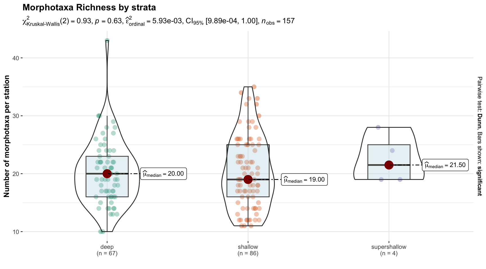
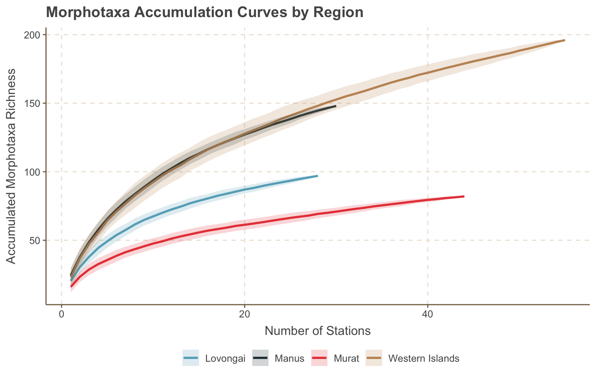

# Load the dataload(file =file.path(exp_path, "data", "primary", "processed", "lpi", "lpi_staging.RData"))sites <-read_rds(file.path(exp_path, "data/primary/processed/sites.rds"))uvs_sites <- sites$uvsregion_names <- lpi_stations |>distinct(region) |>arrange(region) |>pull(region)# Create a clean inline string (e.g., "Lovongai, Manus, Murat, and Western Islands")region_list <- glue::glue_collapse(region_names, sep =", ", last =", and ")functional_group_order <-c("hard coral", "cca", "soft coral", "sponges", "erect algae", "encrusting algae", "turf", "sediment/rubble/barren", "other", "cyanobacteria")region_order <-c("Lovongai", "Murat", "Manus", "Western Islands")functional_palette <-c("hard coral"="#EA9E8D","cca"="#F1B6DA","cyanobacteria"="#000000","soft coral"="#B4D6D3","sponges"="#F6C141","sediment/rubble/barren"="#BDBDBD","encrusting algae"="#88B04B", # sage green"erect algae"="#4DAF4A", # bright macroalgal green"turf"="#8C6D31", # slate blue"other"="#7C4D8E")region_palette <-c("Murat"="#20C997", "Lovongai"="#F94144", "Manus"="#577590","Western Islands"="#F9C74F") habitat_palette <-c("fore reef"="#8BE0D4", # clearer aqua — more readable than pale cyan"back reef"="#E67E7E", # soft coral red — distinct but not too aggressive"channel"="#F4C542", # golden yellow — fits reef + sand imagery"patch reef"="#9370DB" )# Custom theme based on nytimes but with normal header casingcustom_tbl_theme <-reactableTheme(backgroundColor ="#ffffff",borderColor ="#e0e0e0",stripedColor ="#f9f9f9",highlightColor ="#f0f0f0",cellPadding ="2px",style =list(fontFamily ="Roboto", fontSize ="13px"),headerStyle =list(background ="#efefef",fontWeight ="bold",fontSize ="13px",textTransform ="none", # <- disables all capscolor ="black"))# Custom gt table themecustom_gt_theme <-function(gt_table) { gt_table |>fmt_number(columns =where(is.numeric),decimals =2 ) |>tab_style(style =list(cell_text(weight ="bold")),locations =cells_body(columns =everything(),rows =if_else(!is.null(gt_table$`_data`) &&"p_raw"%in%names(gt_table$`_data`), gt_table$`_data`$p_raw <0.05, FALSE) ) ) |>cols_hide(columns =matches("p_raw")) |>cols_align(align ="center") |>opt_row_striping() |>tab_options(table.font.size ="small",heading.title.font.size =16,heading.subtitle.font.size =13,row.striping.background_color ="#f0f0f0",table.border.top.color ="white",table.border.bottom.color ="white",column_labels.font.weight ="bold" )}
This document presents an exploratory analysis of benthic community structure from the Pristine Seas: Papua New Guinea 2024 expedition. Using standardized Line Point-Intercept (LPI) surveys across diverse reef habitats and regions, we examine patterns in benthic richness, community composition, reef health indicators, and coral bleaching. The goal is to extract key ecological signals to inform downstream synthesis, conservation planning, and scientific reporting
1 Overview
We begin by summarizing the expedition’s spatial coverage — including an interactive site map, sampling effort across regions, and an overview of the taxonomic and functional breadth captured during surveys.
We sampled 89 unique reef sites, comprising 157 individual transect stations, spanning four distinct regions — Lovongai, Manus, Murat, and Western Islands — across gradients of depth, exposure, and habitat. Surveys were conducted by 3 divers across 3 depth strata and spanned a diverse set of environments: 4 regions, 4 habitat types, and 3 exposure categories. This broad sampling design supports a robust comparison of benthic communities across environmental gradients and geographic locations.
lpi_stations |>group_by(region, habitat, depth_strata) |>summarise(n =n_distinct(ps_station_id), .groups ="drop") |>pivot_wider(names_from = habitat, values_from = n, values_fill =0) |>mutate(Total =rowSums(across(where(is.numeric)), na.rm =TRUE)) |>gt(groupname_col ="region") |>tab_header(title ="Summary of sampling effort by region",subtitle ="Number of stations surveyed by depth strata and habitat") |>tab_spanner(label ="Reef Habitats", columns =c("fore reef", "back reef", "channel", "patch reef")) |>tab_style(style =list(cell_fill(color ="#f0f0f0"),cell_text(weight ="bold")),locations =list(cells_column_labels(everything()),cells_column_spanners(spanners ="Reef Habitats"))) |>opt_table_font(font =list(gt::google_font("Roboto"), default_fonts())) |>opt_row_striping() |>tab_options(row_group.as_column = T,table.width =pct(100),table.font.size ="small") |>opt_vertical_padding(scale =0.7) |>tab_source_note(source_note ="Depth stratum: supershallow (< 6 m), shallow (7 - 15 m), and deep (>= 15 m).")
Table 1: Number of LPI survey stations by habitat and depth strata
Summary of sampling effort by region
Number of stations surveyed by depth strata and habitat
depth_strata
Reef Habitats
Total
fore reef
back reef
channel
patch reef
Lovongai
shallow
16
3
0
0
19
deep
8
0
0
0
8
supershallow
1
0
0
0
1
Manus
shallow
15
0
1
1
17
deep
11
0
0
1
12
supershallow
0
0
0
1
1
Murat
deep
22
0
0
0
22
shallow
22
0
0
0
22
Western Islands
deep
24
1
0
0
25
shallow
26
2
0
0
28
supershallow
1
1
0
0
2
Depth stratum: supershallow (< 6 m), shallow (7 - 15 m), and deep (>= 15 m).
1.3 Taxonomic Composition
This section summarizes the overall taxonomic and functional structure of the benthic communities recorded during the expedition. It provides context for interpreting patterns in richness and composition, highlighting the diversity of morphotaxa observed and their ecological roles.
The dataset includes 7,772 individual contact observations representing 341 unique morphotaxa assigned to 10 functional groups, from 4 kingdoms and 11 phyla.
Figure 2: Distribution of Benthic Morphotaxa across Taxonomic Classes
Among functional groups, sponges (91 morphotaxa), erect algae (81 morphotaxa), and soft corals (58 morphotaxa) were particularly rich.
Code
plot_by_func <- sum_func |>pivot_longer(cols =c(n_morphotaxa, n_accepted),names_to ="type", values_to ="count") |>mutate(type =recode(type,"n_morphotaxa"="Morphotaxa","n_accepted"="Accepted Names")) |>group_by(functional_group) |>mutate(total =sum(count)) |>ungroup() |>mutate(functional_group =fct_reorder(functional_group, total)) |>ggplot(aes(x = count, y = functional_group, fill = type, text =paste(type, ":", count))) +geom_col(position =position_dodge(width =0.7), width =0.6) +scale_fill_manual(values =c("Morphotaxa"="#1f77b4", "Accepted Names"="#ff7f0e")) +labs(title ="Morphotaxa and Accepted Names by Functional Group",x ="Count", y =NULL, fill ="") +theme(legend.position ="top",plot.title =element_text(face ="bold"))+scale_x_continuous(expand =expansion(mult =c(0, 0.05))) # Then pass to plotlyplotly::ggplotly(plot_by_func, tooltip ="text")
Figure 3: Distribution of Benthic Morphotaxa across Functional Groups
Field morphotaxa were consolidated to their lowest defensible taxonomic rank based on authoritative references (e.g., uncertain sponge morphotypes assigned to Porifera at the phylum level). This step substantially reduced the number of distinct accepted names compared to field morphotaxa — particularly for groups like sponges and soft corals where fine-scale identification is notoriously difficult. After consolidating morphotaxa to their lowest defensible taxonomic rank, the majority of benthic observations were classified at the species and genus levels across most functional groups (Table 2).
Table 2: Summary of morphotaxa by functional group and lowest defensible taxonomic rank
Summary of Benthic Functional Groups
Number of morphotaxa, accepted species, and survey points recorded per functional group
2 Benthic Richness
This section explores patterns in benthic morphotaxa richness across surveyed stations and regions. Richness — the number of distinct morphotaxa observed per site — serves as a key indicator of benthic community diversity.
We examine variation in richness across environmental gradients (region, depth, exposure, habitat) using exploratory plots and formal statistical modeling. First, simple visualizations provide initial insights. Then, a Poisson GLMM is fitted to formally model richness as a function of key predictors, accounting for random variation among sites. Finally, species accumulation curves are used to assess the completeness of taxonomic sampling. The main questions addressed are:
How does morphotaxon richness vary across regions, habitats, exposures, and depth strata?
Are some regions consistently more taxonomically rich than others?
We begin by visualizing benthic morphotaxa richness across stations, stratified by environmental variables. These exploratory plots, generated with ggbetweenstats, reveal variability and suggest potential differences across groups such as regions, depth strata, and divers.
While informative, these initial comparisons do not adjust for confounding factors or site-level random effects. To formally test the significance of environmental predictors on richness, we fit a generalized linear mixed model (GLMM) in the next section.
ggstatsplot::ggbetweenstats(data = richness_by_station, x = region, y = richness, mean.ci =TRUE,pairwise.comparisons =TRUE,p.adjust.method ="holm",type ="nonparametric",title ="Morphotaxa Richness by Region", xlab ="", ylab ="Number of morphotaxa per station")
Figure 4: Morphotaxa richness by region
Code
ggstatsplot::ggbetweenstats(data = richness_by_station, x = depth_strata, y = richness, mean.ci =TRUE,pairwise.comparisons =TRUE,p.adjust.method ="holm",type ="nonparametric",title ="Morphotaxa Richness by strata", xlab ="", ylab ="Number of morphotaxa per station")

Figure 5: Morphotaxa richnnes by depth
Code
ggstatsplot::ggbetweenstats(data = richness_by_station, x = diver, y = richness, mean.ci =TRUE,pairwise.comparisons =TRUE,p.adjust.method ="holm",type ="nonparametric",title ="Morphotaxa richness by diver", xlab ="", ylab ="Number of morphotaxa per station")
Figure 6: Morphotaxa richnnes by diver
2.2 Statistical model
Code
library(lme4)library(lmerTest)library(parameters)# Poisson GLMM with random intercept for siteglmm_richness <-glmer(richness ~ region + depth_strata + exposure + habitat + (1| subregion),data = richness_by_station,family =poisson())#performance::check_overdispersion(glmm_richness)glmm_richness_performance <- performance::model_performance(glmm_richness)
To formally evaluate how benthic morphotaxon richness varies across environmental gradients, we fit generalized linear mixed models (GLMMs) with a Poisson distribution. Richness, expressed as the count of distinct morphotaxa per station, is modeled as a function of region, depth strata, exposure and habitat.
Given the spatial structure of the sampling design, we include subregion (island) as a random intercept to account for spatial clustering and shared environmental context. Stations within the same subregion are more likely to be ecologically similar, and subregions represent meaningful ecological units across the study area.
This modeling approach allows us to test for overall effects of environmental gradients while accounting for non-independence among stations, thus producing more robust estimates of richness patterns.
Poisson GLMM with subregion random effect (n = 157 stations)
IRR
SE
95% CI
z
p-value
Intercept (baseline)
20.65
2.42
[16.40, 25.99]
25.78
< .001
Region: murat
0.75
0.07
[0.62, 0.91]
−2.89
0.004
Region: manus
1.16
0.12
[0.95, 1.41]
1.43
0.153
Region: western islands
1.05
0.09
[0.88, 1.25]
0.54
0.591
Depth: shallow
0.99
0.04
[0.92, 1.06]
−0.35
0.723
Depth: supershallow
0.90
0.12
[0.69, 1.18]
−0.77
0.442
Exposure: leeward
1.12
0.32
[0.64, 1.97]
0.39
0.696
Exposure: windward
1.12
0.33
[0.63, 1.98]
0.38
0.704
Habitat: channel
0.77
0.27
[0.39, 1.55]
−0.73
0.468
Habitat: fore reef
0.89
0.25
[0.52, 1.53]
−0.43
0.670
Habitat: patch reef
1.08
0.30
[0.62, 1.87]
0.27
0.790
The Poisson GLMM revealed a significant effect of region on benthic morphotaxa richness (p = 0.004 for Murat vs. Lovongai). Stations in the Murat region had significantly lower richness than those in Lovongai, with an estimated reduction of about 25% on the log scale. Differences for Manus and the Western Islands were not statistically significant. No clear effects were detected for depth strata, exposure, or habitat (p > 0.1 for all). Subregion-level random effects were small (variance = 0.013), indicating limited additional clustering beyond fixed regional differences. The estimated baseline richness under reference conditions was approximately 20 morphotaxa per station.
The model’s conditional R² (0.46) indicates that 46 % of the variation in richness is explained by both fixed (region, depth, exposure) and random effects (site-level variation). The marginal R², representing variation explained by fixed effects alone, was 0.32.
Marginal Means
To better understand regional differences in benthic richness, we compare the observed mean richness per region to model‐estimated means from the Poisson GLMM. While observed means provide a direct summary of the data, GLMM predictions account for other covariates and random effects, offering a standardized comparison across regions.
Code
library(emmeans)# 1. Predicted meansemm_region <-emmeans(glmm_richness, ~ region, type ="response") |>as_tibble() |>rename(mean_pred = rate,lower.CL = asymp.LCL,upper.CL = asymp.UCL)# 2. Observed meansobs_region <- richness_by_station |>group_by(region) |>summarise(mean_obs =mean(richness, na.rm =TRUE),median_obs =median(richness, na.rm =TRUE),n_stations =n(),.groups ="drop")# 3. Mergerichness_summary <-left_join(obs_region, emm_region, by ="region")# 4. Compact letter display (groupings)group_letters <-cld(emmeans(glmm_richness, ~ region, type ="response"),adjust ="tukey", Letters = letters, alpha =0.05) |>as_tibble() |>select(region, .group)richness_summary <-left_join(richness_summary, group_letters, by ="region")library(ggtext) # for geom_richtextrichness_summary |>mutate(mean_obs_label =round(mean_obs, 1),mean_pred_label =round(mean_pred, 1),label_text =paste0("<span style='color:gray30;'>**Obs:** ", mean_obs_label, "</span><br>","<span style='color:white;'>**Pred:** ", mean_pred_label, "</span>")) |>ggplot(aes(x =fct_reorder(region, mean_obs))) +# Bars for observed mean richness, colored by regiongeom_col(aes(y = mean_obs, fill = region), width =0.6, color ="gray30") +# Error bars for predicted mean ± 95% CIgeom_errorbar(aes(ymin = lower.CL, ymax = upper.CL), color ="gray30",width =0.15, size =0.8) +# Points for predicted mean richnessgeom_point(aes(y = mean_pred, color = region), fill ="white", shape =21, size =4, stroke =1.2) +# Letters for significancegeom_text(aes(y = upper.CL +1, label = .group),size =4, fontface ="bold", color ="black") +# Fancy aligned richtext labels ggtext::geom_richtext(aes(y =1.1, label = label_text),hjust = .75, vjust =0.5, size =3.3,fill =NA, label.color =NA) +scale_fill_manual(values = region_palette) +scale_color_manual(values = region_palette) +labs(x =NULL,y ="Morphotaxa Richness",title ="Observed vs. Predicted Benthic Richness by Region",subtitle ="Bars = observed means; points and error bars = GLMM predictions (95% CI)\nLetters denote groups not significantly different (Tukey-adjusted α = 0.05)") +theme(axis.text.x =element_text(angle =25, hjust =1),axis.title.y =element_text(face ="bold"),legend.position ="none",plot.margin =margin(10, 30, 10, 10)) +scale_y_continuous(expand =expansion(mult =c(0, 0.15)))
Figure 7: Observed and GLMM‐predicted morphotaxon richness by region. Letters indicate Tukey‐adjusted groupings (α = 0.05).
Pairwise comparisons reveal that Murat consistently had lower benthic richness than the other regions, with significantly reduced richness compared to Lovongai, Manus, and the Western Islands. In contrast, richness differences among Lovongai, Manus, and Western Islands were not statistically significant, suggesting broadly comparable community diversity across these regions.
2.3 Species accumulation curves
Species accumulation curves were generated based on presence-weighted morphotaxon data to assess regional benthic richness and sampling completeness (Figure 8). Curves show the cumulative number of morphotaxa as stations are added, with steeper slopes indicating higher diversity and community turnover. Shaded ribbons reflect variation among random station orderings, providing an estimate of within-region heterogeneity.
Code
library(vegan)# Species matrix with one row per station × regiontaxa_cover_matrix <- cover_by_station_and_taxa |>left_join(lpi_stations |>distinct(ps_station_id, region), by ="ps_station_id") |>filter(contacts >0) |>select(region, ps_station_id, morphotaxon, contacts) |>pivot_wider(id_cols =c(region, ps_station_id),names_from = morphotaxon,values_from = contacts,values_fill =list(contacts =0) )# 1. Nest species matrix by regiontaxa_nested <- taxa_cover_matrix |>group_by(region) |>nest()# 2. Compute specaccum per regionaccum_curves <- taxa_nested |>mutate(acc =map(data, ~specaccum(select(.x, where(is.numeric)), method ="random")),curve =map(acc, ~tibble(station_number = .x$sites,richness = .x$richness,sd = .x$sd )) ) |>select(region, curve) |>unnest(curve)# 3. Plotggplot(accum_curves, aes(x = station_number, y = richness, color = region, fill = region)) +geom_line(linewidth =1) +geom_ribbon(aes(ymin = richness - sd, ymax = richness + sd), alpha =0.2, color =NA) +labs(title ="Morphotaxa Accumulation Curves by Region",x ="Number of Stations",y ="Accumulated Morphotaxa Richness") +theme(legend.position ="bottom")+labs(fill ="", col ="")

Figure 8: Morphotaxa accumulation curves by region
Species accumulation patterns reveal marked regional differences in benthic diversity. Manus and Western Islands stand out as the most species-rich and heterogeneous, with curves that continue to rise and broad confidence bands. Lovongai shows moderate richness and appears to be more completely sampled, while Murat exhibits the lowest richness and least variability. Together, these curves provide a baseline for comparing biodiversity across regions and evaluating the sufficiency of sampling efforts.
3 Community Structure
In this section, we examine patterns of benthic community structure based on morphotaxa-level composition. We first use PERMANOVA to test whether assemblages differ significantly across regions, depth strata, exposures, and habitats. To visualize these multivariate patterns, we apply non-metric multidimensional scaling (NMDS) ordination
Composition
We first visualize the average contribution of each morphotaxon to benthic cover within subregions, highlighting dominant taxa and spatial patterns in taxonomic composition.
Code
# For each region, expand all combinations of observed morphotaxa × stations, making zeros where missing — but never introduce a taxon that was not observed in the region.morph_cover_by_subregion <- cover_by_station_and_taxa |>ungroup() |>left_join(lpi_stations |>select(ps_station_id, region, subregion), by ="ps_station_id") |>group_by(region) |>complete(nesting(functional_group, morphotaxon, accepted_name), nesting(ps_station_id, subregion),fill =list(contacts =0, pct_cover =0)) |>ungroup() |>group_by(region, subregion, morphotaxon) |>summarize(cover =mean(pct_cover, na.rm =TRUE), .groups ="drop")plot_df <- morph_cover_by_subregion |>mutate(label =if_else(cover >1, morphotaxon, "Other")) |>mutate(label =fct_reorder(label, cover, .desc =FALSE))# Get all unique labels that will appearall_labels <-unique(plot_df$label)set.seed(123) # Pull a large palette (Named has ~100 colors)large_palette <- paletteer::paletteer_d("palettesForR::Named") |>as.character() |>sample()# Create the initial mappingpalette_mapping <-setNames(large_palette[1:length(all_labels)], all_labels)# Now, override with functional_palette colors if available# Assuming `functional_palette` is your functional group palette like:# functional_palette <- c("hard coral" = "#F8766D", "sponges" = "#00BFC4", etc.)for (label innames(functional_palette)) {if (label %in%names(palette_mapping)) { palette_mapping[label] <- functional_palette[label] }}# Plotmorph_plot <- morph_cover_by_subregion |>mutate(label =if_else(cover >1, morphotaxon, "Other")) |>mutate(label =fct_reorder(label, cover, .desc =FALSE)) |>ggplot(aes(x = subregion, y = cover, fill = label,text =paste0("Morphotaxon: ", label, "<br>","Mean Cover: ", round(cover, 1), "%")))+geom_col() +scale_fill_manual(values = palette_mapping) +labs(title ="Dominant Morphotaxa Across Subregions",subtitle ="Morphotaxa contributing >1% mean cover shown individually; others grouped under 'Other'.",x =NULL,y ="Mean % Cover",fill ="") +theme_minimal(base_size =14) +theme(plot.title =element_text(face ="bold", size =16),plot.subtitle =element_text(size =13),axis.text.x =element_text(angle =45, hjust =1),axis.title.y =element_text(face ="bold"),legend.position ="right",legend.title =element_text(face ="bold"),legend.text =element_text(size =10),legend.key.height =unit(0.4, "cm"),legend.key.width =unit(0.8, "cm"),legend.box ="vertical" ) +guides(fill =guide_legend(ncol =1)) +scale_y_continuous(expand =expansion(mult =c(0, 0.05)))# Make it interactivemorph_plotly <-ggplotly(morph_plot, tooltip ="text") |>layout(legend =list(orientation ="v", # verticalx =1.05, # a bit outside the ploty =1,xanchor ="left",yanchor ="top"))morph_plotly
Figure 9: Morphotaxa composition by subregion
PERMANOVA
To statistically assess variation in benthic assemblages, we conducted a permutational multivariate analysis of variance (PERMANOVA) based on Bray–Curtis dissimilarities. We tested for effects of region, depth strata, exposure, and habitat, evaluating both their significance and relative explanatory power.
Table 4: PERMANOVA results testing effects of region, depth, habitat, and exposure on benthic community composition (Bray–Curtis dissimilarities).
PERMANOVA Results: Benthic Community Structure
Bray–Curtis dissimilarity, 999 permutations
Df
Sum of Squares
R²
F-value
p.value
p-value
region
3
5.611
0.184
12.199
0.001
< .001
depth_strata
2
0.809
0.026
2.637
0.003
0.003
habitat
3
0.513
0.017
1.116
0.299
0.299
exposure
2
0.781
0.026
2.548
0.002
0.002
Residual
146
22.385
0.733
NA
NA
NA
Total
156
30.542
1.000
NA
NA
NA
Significant variation was detected by region (r2 = 18.4%, p = 0.001), depth strata (r2 = 2.6%, p = 0.003), and exposure (r2 = 2.6%, p = 0.002), while habitat was not significant.
Overall, the model explained 26.7% of the total variance in benthic community composition.
NMDS Ordination
To visualize patterns in benthic community composition, we conducted a two-dimensional non-metric multidimensional scaling (NMDS) analysis based on Bray–Curtis dissimilarities. Points represent individual stations, colored by region and shaped by depth stratum. Ellipses denote 75% confidence intervals around each region, highlighting regional clustering and overlap in community structure.
Figure 10: NMDS Ordination of Benthic Community Structure
4 Functional Group Structure
Shifting to a broader ecological scale, we characterize benthic community structure based on functional group composition (e.g., hard corals, CCA, algae, sponges). We test for differences in functional assemblages across regions, depth strata, and exposures using PERMANOVA. To visualize patterns in functional composition, we perform NMDS ordination and identify functional groups most strongly associated with gradients in community structure.
Cover
Code
# 1. Get average cover by functional group and subregionfunc_cover_by_station <- cover_by_station_and_taxa %>%group_by(ps_station_id, functional_group) %>%summarize(contacts =sum(contacts), .groups ="drop") %>%group_by(ps_station_id) %>%mutate(pct_cover =round(contacts /sum(contacts) *100, 3)) %>%ungroup() %>%complete(ps_station_id, functional_group, fill =list(contacts =0, pct_cover =0))func_cover_by_subregion <- func_cover_by_station |>left_join(lpi_stations |>distinct(ps_station_id, region, subregion)) |>group_by(region, subregion, functional_group) |>summarize(n_stations =n_distinct(ps_station_id),avg_cover =mean(pct_cover, na.rm =TRUE), .groups ="drop") |>mutate(functional_group =factor(functional_group, levels = functional_group_order)) func_cover_by_subregion |>group_by(subregion) |>mutate(avg_cover_rescaled = avg_cover /sum(avg_cover) *100) |>ggplot(aes(x = subregion, y = avg_cover_rescaled, fill =fct_rev(functional_group)))+geom_col()+scale_fill_manual(values = functional_palette)+theme(axis.text.x =element_text(angle =45, hjust =1),legend.position ="bottom",legend.box ="horizontal")+facet_wrap(~region, ncol =4, scales ="free_x")+labs(y ="Avg. % Cover",x ="",title ="Average % Cover by Functional Group and Subregion",fill ="")+scale_y_continuous(expand =expansion(mult =c(0, 0.05)))
Figure 11: Average Cover by Functional Group and Subregion
To test for differences in benthic community composition, we ran a PERMANOVA (adonis2) using Bray-Curtis dissimilarities derived from functional group percent cover. The model included region, depth_strata, habitat, and exposure as predictors.
Table 5: PERMANOVA results for benthic community composition by functional group (Bray-Curtis dissimilarities)
PERMANOVA Results: Benthic Community Composition
Bray-Curtis dissimilarity | 999 permutations
Df
Sum of Squares
R²
F-value
p-value
region
3
2.415
0.132
8.384
< .001
depth_strata
2
0.688
0.038
3.585
0.003
habitat
3
0.323
0.018
1.122
0.324
exposure
2
0.634
0.035
3.305
< .001
Residual
146
14.016
0.768
NA
NA
Total
156
18.259
1.000
NA
NA
Significant variation was detected by region (r2 = 13.2%, p = < .001), depth strata (r2 = 3.8%, p = 0.003), and exposure (r2 = 3.5%, p = < .001), while habitat was not significant.
Overall, the model explained 23.2% of the total variance in benthic community composition.
NMDS Ordination
We followed with a 2D NMDS to visualize spatial patterns in community structure. Points represent individual stations, colored by region and shaped by depth stratum. Overlaid ellipses capture 75% confidence contours for each region.
Figure 13: NMDS Ordination of Benthic Community Structure by Functional Group
5 Indicators of Reef Health
Building on the characterization of community composition, we now focus on key benthic indicators of reef health: percent cover of live hard coral, crustose coralline algae (CCA), and benthic cyanobacteria. These metrics serve as essential proxies for reef condition, resilience, and stress. We summarize spatial patterns, statistically test for regional differences, and examine potential warning signs such as coral bleaching.
Figure 15: Average % Hard Coral Cover by Subregion
Does coral cover vary by depth and region?
Code
library(emmeans)library(glmmTMB)# Filter hard coral cover and join region infocoral_cover_by_station <- func_cover_by_station |>filter(functional_group =="hard coral") |>left_join(lpi_stations |>distinct(ps_site_id, ps_station_id, region, subregion, depth_strata, exposure, habitat), by ="ps_station_id")glmm_coral <-glmmTMB(pct_cover/100~ region + depth_strata + exposure + habitat + (1| subregion),data = coral_cover_by_station,family =beta_family(link ="logit"))emm_depth <-emmeans(glmm_coral, ~ depth_strata, type ="response", adjust ="sidak")
Hard coral cover varied across regions and environmental gradients, but only depth strata showed a statistically significant effect in the fitted beta GLMM (Table 6). Sites at shallower depths exhibited significantly higher hard coral cover compared to deep sites (Estimate = 0.35, p < .001), while no significant differences were detected among regions, exposure categories, or habitat types.
Code
# 1. Extract model parameterscoral_glmm_summary <- parameters::model_parameters(glmm_coral, exponentiate = F) |>mutate(CI =sprintf("[%.2f, %.2f]", CI_low, CI_high),p_fmt =case_when(is.na(p) ~NA_character_, p <0.001~"< .001",TRUE~formatC(p, format ="f", digits =3))) |>select(Parameter, Estimate = Coefficient, SE, CI, Z = z, `p-value`= p_fmt, p)# 2. Build gt tablecoral_glmm_summary |>gt(rowname_col ="Parameter") |>tab_header(title =md("**GLMM Results: Coral Cover by Region, Depth, Exposure, and Habitat**"),subtitle ="Beta regression with logit link (n = 157 stations).") |>tab_style(style =list(cell_fill(color ="#f9f9f9")),locations =cells_body()) |>tab_style(style =cell_text(weight ="bold", color ="black"),locations =cells_body(rows =`p-value`=="< .001"|`p`<0.05,columns =everything())) |>cols_align(align ="center") |>opt_row_striping() |>cols_hide(columns =c(p)) |>fmt_number(columns =c(Estimate, SE, Z),decimals =2) |>tab_options(table.font.size ="small",row.striping.include_table_body =TRUE,table.border.top.color ="white",table.border.bottom.color ="white",heading.title.font.size =16,heading.subtitle.font.size =13,row.striping.background_color ="#f0f0f0",column_labels.font.weight ="bold")
Table 6: GLMM results for hard coral cover by region, depth strata, exposure, and habitat
GLMM Results: Coral Cover by Region, Depth, Exposure, and Habitat
Beta regression with logit link (n = 157 stations).
Estimate
SE
CI
Z
p-value
(Intercept)
−1.65
0.38
[-2.40, -0.91]
−4.36
< .001
regionManus
−0.25
0.36
[-0.95, 0.45]
−0.71
0.480
regionMurat
−0.33
0.34
[-1.00, 0.35]
−0.95
0.341
regionWestern Islands
0.30
0.31
[-0.31, 0.91]
0.97
0.332
depth_stratashallow
0.30
0.11
[0.07, 0.52]
2.60
0.009
depth_stratasupershallow
0.26
0.45
[-0.62, 1.14]
0.58
0.563
exposureleeward
−0.08
0.87
[-1.79, 1.62]
−0.10
0.923
exposurewindward
−0.45
0.88
[-2.17, 1.27]
−0.51
0.611
habitatchannel
1.06
1.09
[-1.08, 3.20]
0.97
0.331
habitatfore reef
0.86
0.83
[-0.76, 2.48]
1.04
0.297
habitatpatch reef
1.07
0.85
[-0.60, 2.75]
1.26
0.208
(Intercept)
8.99
NA
[7.15, 11.30]
NA
NA
SD (Intercept)
0.42
NA
[0.25, 0.70]
NA
NA
Marginal Means
Code
library(emmeans)library(ggplot2)library(dplyr)library(glue)# 1. Compute predicted means + Tukey cld letterscld_depth <- emm_depth |>cld(alpha =0.05, Letters = letters, adjust ="sidak") |>as_tibble() |>mutate(mean_pred = response *100, # back-transform % scalelower.CL = asymp.LCL *100,upper.CL = asymp.UCL *100) |>select(depth_strata, mean_pred, lower.CL, upper.CL, .group)# 2. Observed station means by depthobs_depth <- coral_cover_by_station |>group_by(depth_strata) |>summarise(n_stations =n(),mean_obs =mean(pct_cover, na.rm =TRUE),median_obs =median(pct_cover, na.rm =TRUE),.groups ="drop")# 3. Merge and orderdepth_summary <- obs_depth |>left_join(cld_depth, by ="depth_strata") |>mutate(depth_strata =fct_reorder(depth_strata, mean_obs))# 4. Plotdepth_summary |>mutate(mean_obs_label =round(mean_obs, 1),mean_pred_label =round(mean_pred, 1),label_text =paste0("<span style='color:gray30;'>**Obs:** ", mean_obs_label, "</span><br>","<span style='color:white;'>**Pred:** ", mean_pred_label, "</span>")) |>ggplot(aes(x =fct_reorder(depth_strata, mean_obs))) +# Bars for observed mean richness, colored by depth_stratageom_col(aes(y = mean_obs, fill = depth_strata), width =0.6, color ="gray30") +# Error bars for predicted mean ± 95% CIgeom_errorbar(aes(ymin = lower.CL, ymax = upper.CL), color ="gray30",width =0.15, size =0.8) +# Points for predicted mean richnessgeom_point(aes(y = mean_pred, color = depth_strata), fill ="white", shape =21, size =4, stroke =1.2) +# Letters for significancegeom_text(aes(y = upper.CL +2, label = .group),size =4, fontface ="bold", color ="black") +# Fancy aligned richtext labels ggtext::geom_richtext(aes(y =5, label = label_text),hjust = .75, vjust =0.5, size =3.3,fill =NA, label.color =NA) +labs(x =NULL,y ="Coral Cover",title ="Observed vs. Predicted Coral Cover by Depth strata",subtitle ="Bars = observed means; points and error bars = GLMM predictions (95% CI)\nLetters denote groups not significantly different (Tukey-adjusted α = 0.05)") +theme(axis.text.x =element_text(angle =25, hjust =1),axis.title.y =element_text(face ="bold"),legend.position ="none",plot.margin =margin(10, 30, 10, 10)) +scale_y_continuous(expand =expansion(mult =c(0, 0.15)))
Figure 16: Observed vs. Predicted Coral Cover by Depth Strata (with Tukey-adjusted group letters)
Observed mean coral cover varied modestly with depth. Deep reefs had a mean cover of 29.9 while shallow reefs averaged 34.6 %, and supershallow sites 33.5 %. Our Beta‐GLMM predictions mirror these trends. Tukey‐adjusted letters show shallow reefs had significantly higher cover than deep reefs (p < .05), with supershallow overlapping both.
Code
library(emmeans)library(dplyr)library(ggplot2)library(ggtext)# 1. Fit emmeans and compute CLDsemm_coral_region <-emmeans(glmm_coral, ~ region, type ="response")region_cld <-cld(emm_coral_region,adjust ="sidak", # Sidak adjustment for multiple comparisonsLetters = letters, # letter setalpha =0.05,by =NULL)# 2. Tidy predicted means + join letterspred_region <-as_tibble(emm_coral_region) %>%transmute(region,mean_pred = response *100,lower.CL = asymp.LCL *100,upper.CL = asymp.UCL *100) %>%left_join(region_cld %>%select(region, .group), by ="region")# 3. Calculate observed station‐meansobs_region_cover <- coral_cover_by_station %>%group_by(region) %>%summarise(n_stations =n(),mean_obs =mean(pct_cover, na.rm =TRUE),median_obs =median(pct_cover, na.rm =TRUE),.groups ="drop")# 4. Merge observed + predicted + letterscoral_region_summary <- obs_region_cover %>%left_join(pred_region, by ="region") %>%mutate(region =fct_reorder(region, mean_obs))coral_region_summary |>mutate(mean_obs_label =round(mean_obs, 1),mean_pred_label =round(mean_pred, 1),label_text =paste0("<span style='color:gray30;'>**Obs:** ", mean_obs_label, "</span><br>","<span style='color:white;'>**Pred:** ", mean_pred_label, "</span>")) |>ggplot(aes(x =fct_reorder(region, mean_obs))) +# Bars for observed mean richness, colored by regiongeom_col(aes(y = mean_obs, fill = region), width =0.6, color ="gray30") +# Error bars for predicted mean ± 95% CIgeom_errorbar(aes(ymin = lower.CL, ymax = upper.CL), color ="gray30",width =0.15, size =0.8) +# Points for predicted mean richnessgeom_point(aes(y = mean_pred, color = region), fill ="white", shape =21, size =4, stroke =1.2) +# Letters for significancegeom_text(aes(y = upper.CL +2, label = .group),size =4, fontface ="bold", color ="black") +# Fancy aligned richtext labels ggtext::geom_richtext(aes(y =5, label = label_text),hjust = .75, vjust =0.5, size =3.3,fill =NA, label.color =NA) +labs(x =NULL,y ="Hard Coral (% cover)",title ="Observed vs. Predicted Coral Cover by Region",subtitle ="Bars = observed means; points and error bars = GLMM predictions (95% CI)\nLetters denote groups not significantly different (Tukey-adjusted α = 0.05)") +theme(axis.text.x =element_text(angle =25, hjust =1),axis.title.y =element_text(face ="bold"),legend.position ="none",plot.margin =margin(10, 30, 10, 10)) +scale_y_continuous(expand =expansion(mult =c(0, 0.15)))+scale_fill_manual(values = region_palette)
Figure 17: Observed vs. Predicted Coral Cover by Region (with Tukey-adjusted group letters)
Observed mean coral cover ranged from 27.5% in Murat to 39.3 % in the Western Islands, with corresponding predicted mean covers from the model following a similar pattern but with wider uncertainty intervals. No significant pairwise differences among regions were detected based on the GLMM predictions indicating that while there is visible variation in coral cover across subregions, these differences were not statistically robust after accounting for environmental covariates and random site effects.
Bleaching
Beginning at site 24, the survey protocol was expanded to separately record bleaching status, using a new category for “hard coral – bleached” under the same Line Point Intercept (LPI) method. In this section, we summarize patterns of coral bleaching prevalence across regions and depth strata, and evaluate whether bleaching incidence varies significantly across environmental gradients.
Bleaching was observed at 113 stations, representing approximately 72% of all surveyed sites. Across these stations, the average bleaching prevalence was 10.8 %, while the median bleaching was lower at 7.5 %. Bleaching severity varied widely, ranging from 0% at some sites to as high as 87.1% at others.
ggplot(bleaching_by_station, aes(x = pct_coral_cover, y = pct_bleached)) +geom_point(size =2, alpha =0.7) +geom_smooth(method ="lm", se =TRUE, color ="black", linewidth =0.8) +labs(x ="% Hard Coral Cover",y ="% Bleached Coral",title ="Relationship Between Coral Cover and Bleaching Prevalence") +theme_minimal(base_size =14) +theme(plot.title =element_text(face ="bold", size =16))cor_test <-cor.test(bleaching_by_station$pct_coral_cover, bleaching_by_station$pct_bleached,method ="spearman")
Figure 19: Relationship between hard coral cover and bleaching prevalence across stations.
We tested for a correlation between hard coral cover and bleaching prevalence across stations using Spearman’s rank correlation. The correlation was weak (0.07) and not statistically significant (0.487), indicating no clear relationship between overall coral cover and the extent of bleaching across surveyed sites.
Figure 20: Distribution of coral bleaching by region and depth strata
We modeled the percent bleaching across stations using a Beta GLMM with depth strata and region as fixed effects and a random intercept for subregion. Bleaching was significantly lower in Manus (β = -1.51, p < 0.001) and Western Islands (β = -1.32, p < 0.001) compared to Lovongai, while differences across depth strata were not statistically significant. There was moderate random variation among subregions (SD = 0.33).
Code
library(glmmTMB)bleach_glmm <-glmmTMB(formula = (pct_bleached +0.001) /100~ depth_strata + region + (1| subregion),data = bleaching_by_station,family =beta_family(link ="logit"))# 1. Extract model parametersbleach_glmm_summary <- parameters::model_parameters(bleach_glmm, exponentiate = F) |>mutate(CI =sprintf("[%.2f, %.2f]", CI_low, CI_high),p_fmt =case_when(is.na(p) ~NA_character_, p <0.001~"< .001",TRUE~formatC(p, format ="f", digits =3))) |>select(Parameter, Estimate = Coefficient, SE, CI, Z = z, `p-value`= p_fmt, p)# 2. Build gt tablebleach_glmm_summary |>gt(rowname_col ="Parameter") |>tab_header(title =md("**GLMM Results: Coral Bleaching by Region, Depth, Exposure, and Habitat**"),subtitle ="Beta regression with logit link (n = 157 stations).") |>tab_style(style =list(cell_fill(color ="#f9f9f9")),locations =cells_body()) |>tab_style(style =cell_text(weight ="bold", color ="black"),locations =cells_body(rows =`p-value`=="< .001"|`p`<0.05,columns =everything())) |>cols_align(align ="center") |>opt_row_striping() |>cols_hide(columns =c(p)) |>fmt_number(columns =c(Estimate, SE, Z),decimals =2) |>tab_options(table.font.size ="small",row.striping.include_table_body =TRUE,table.border.top.color ="white",table.border.bottom.color ="white",heading.title.font.size =16,heading.subtitle.font.size =13,row.striping.background_color ="#f0f0f0",column_labels.font.weight ="bold")
Table 7: GLMM results for coral bleaching by region, depth strata, exposure, and habitat
GLMM Results: Coral Bleaching by Region, Depth, Exposure, and Habitat
Beta regression with logit link (n = 157 stations).
Estimate
SE
CI
Z
p-value
(Intercept)
−1.45
0.27
[-1.98, -0.92]
−5.34
< .001
depth_stratashallow
0.19
0.20
[-0.19, 0.58]
0.98
0.329
depth_stratasupershallow
0.80
0.53
[-0.24, 1.84]
1.51
0.130
regionManus
−1.51
0.37
[-2.23, -0.78]
−4.09
< .001
regionWestern Islands
−1.32
0.32
[-1.96, -0.69]
−4.10
< .001
(Intercept)
4.91
NA
[3.57, 6.76]
NA
NA
SD (Intercept)
0.33
NA
[0.16, 0.71]
NA
NA
Code
library(emmeans)# Compute marginal means on correct scaleemm_region_bleaching <-emmeans(bleach_glmm, ~ region) |>regrid(transform ="response")# Add compact letter displaycld_region_bleaching <-cld( emm_region_bleaching,Letters = letters, # or specify uppercase if preferredadjust ="tukey", # Important: multiple comparisons adjustmentalpha =0.05, # Default, but you can lower if stricterreverse =TRUE# Optional: so better regions (higher bleaching or lower bleaching) have lower letters)# Convert to tibble if neededcld_region_bleaching_tbl <-as_tibble(cld_region_bleaching)final_bleaching_summary <-as_tibble(cld_region_bleaching) |>mutate(mean_pred_bleach = (response -0.001) *100,lower.CL = (asymp.LCL -0.001) *100,upper.CL = (asymp.UCL -0.001) *100) |>select(region, mean_pred = mean_pred_bleach, lower.CL, upper.CL, .group)# 2. Observed station means by depthobs_bleach <- bleaching_by_station |>group_by(region) |>summarise(n_stations =n(),mean_obs =mean(pct_bleached, na.rm =TRUE),median_obs =median(pct_bleached, na.rm =TRUE),.groups ="drop")# 3. Merge and orderfinal_bleaching_summary <- obs_bleach |>left_join(final_bleaching_summary, by ="region") # 4. Plotfinal_bleaching_summary |>mutate(mean_obs_label =round(mean_obs, 1),mean_pred_label =round(mean_pred, 1),label_text =paste0("<span style='color:gray30;'>**Obs:** ", mean_obs_label, "</span><br>","<span style='color:white;'>**Pred:** ", mean_pred_label, "</span>")) |>ggplot(aes(x =fct_reorder(region, mean_obs))) +# Bars for observed mean richness, colored by regiongeom_col(aes(y = mean_obs, fill = region), width =0.6, color ="gray30") +# Error bars for predicted mean ± 95% CIgeom_errorbar(aes(ymin = lower.CL, ymax = upper.CL), color ="gray30",width =0.15, size =0.8) +# Points for predicted mean richnessgeom_point(aes(y = mean_pred, color = region), fill ="white", shape =21, size =4, stroke =1.2) +# Letters for significancegeom_text(aes(y = upper.CL +2, label = .group),size =4, fontface ="bold", color ="black") +# Fancy aligned richtext labels ggtext::geom_richtext(aes(y =5, label = label_text),hjust = .75, vjust =0.5, size =3.3,fill =NA, label.color =NA) +labs(x =NULL,y ="Belaching (% coral bleached)",title ="Observed vs. Predicted Coral Bleaching by Region",subtitle ="Bars = observed means; points and error bars = GLMM predictions (95% CI)\nLetters denote groups not significantly different (Tukey-adjusted α = 0.05)") +theme(axis.text.x =element_text(angle =25, hjust =1),axis.title.y =element_text(face ="bold"),legend.position ="none",plot.margin =margin(10, 30, 10, 10)) +scale_y_continuous(expand =expansion(mult =c(0, 0.15)))+scale_fill_manual(values = region_palette) +scale_color_manual(values = region_palette)
Figure 21: Observed vs. Predicted Coral Bleaching by Region
Figure 25: Average % Cyanobacteria Cover by Subregion
Statistical tests
We modeled cyanobacteria percent cover using a beta regression with a logit link, including region, depth strata, exposure, and habitat as predictors and subregion as a random intercept. Model fit was strong (AIC = –587.7; dispersion parameter = 26.1), and random effects were small (subregion variance = 0.064). Region was the only significant predictor based on model coefficients: cyanobacteria cover was significantly lower in Manus, Murat, and the Western Islands relative to the reference region (Lovongai), with p-values < 0.05. Other predictors (depth strata, exposure, habitat) showed no significant effects.
Code
# Filter hard coral cover and join region infocyano_cover_station <- func_cover_by_station |>filter(functional_group =="cyanobacteria") |>left_join(lpi_stations |>distinct(ps_site_id, ps_station_id, region, subregion, depth_strata, exposure, habitat), by ="ps_station_id")cyano_cover_station <- cyano_cover_station |>mutate(# Apply standard transformation to handle zeros and ones# (y * (n-1) + 0.5) / n where n is sample sizen =nrow(cyano_cover_station),transformed_cover = (pct_cover/100* (n -1) +0.5) / n )library(glmmTMB)# Beta regression (since % cover is 0-100)glmm_cyano <-glmmTMB(transformed_cover ~ region + depth_strata + exposure + habitat + (1| subregion),data = cyano_cover_station,family =beta_family(link ="logit"))# 1. Extract model parameterscyano_glmm_summary <- parameters::model_parameters(glmm_cyano, exponentiate = F) |>mutate(CI =sprintf("[%.2f, %.2f]", CI_low, CI_high),p.value =case_when(is.na(p) ~NA_character_, p <0.001~"< .001",TRUE~formatC(p, format ="f", digits =3))) |>select(Parameter, Estimate = Coefficient, SE, CI, Z = z, `p-value`= p.value, p)# 2. Build gt tablecyano_glmm_summary |>gt(rowname_col ="Parameter") |>tab_header(title =md("**GLMM Results: Cyano Cover by Region, Depth, Exposure, and Habitat**"),subtitle ="Beta regression with logit link (n = 157 stations).") |>tab_style(style =cell_text(weight ="bold", color ="black"),locations =cells_body(rows =`p-value`=="< .001"|`p`<0.05,columns =everything())) |>tab_style(style =list(cell_fill(color ="#f9f9f9")),locations =cells_body()) |>cols_hide(columns =c(p)) |>cols_align(align ="center") |>opt_row_striping() |>fmt_number(columns =c(Estimate, SE, Z),decimals =2) |>tab_options(table.font.size ="small",row.striping.include_table_body =TRUE,table.border.top.color ="white",table.border.bottom.color ="white",heading.title.font.size =16,heading.subtitle.font.size =13,row.striping.background_color ="#f0f0f0",column_labels.font.weight ="bold")
GLMM Results: Cyano Cover by Region, Depth, Exposure, and Habitat
Beta regression with logit link (n = 157 stations).
Estimate
SE
CI
Z
p-value
(Intercept)
−2.24
0.48
[-3.18, -1.30]
−4.66
< .001
regionManus
−0.76
0.38
[-1.50, -0.03]
−2.03
0.042
regionMurat
−1.04
0.36
[-1.75, -0.33]
−2.89
0.004
regionWestern Islands
−0.81
0.33
[-1.44, -0.17]
−2.48
0.013
depth_stratashallow
−0.02
0.13
[-0.28, 0.24]
−0.17
0.866
depth_stratasupershallow
−0.08
0.53
[-1.13, 0.97]
−0.16
0.876
exposureleeward
−0.87
1.14
[-3.11, 1.36]
−0.77
0.443
exposurewindward
−0.83
1.15
[-3.08, 1.42]
−0.72
0.469
habitatchannel
0.47
1.31
[-2.09, 3.03]
0.36
0.720
habitatfore reef
0.38
1.05
[-1.68, 2.44]
0.36
0.718
habitatpatch reef
−0.24
1.09
[-2.38, 1.90]
−0.22
0.823
(Intercept)
31.78
NA
[23.94, 42.18]
NA
NA
SD (Intercept)
0.43
NA
[0.21, 0.88]
NA
NA
However, when marginal means were back-transformed to the percent cover scale and confidence intervals computed, predicted cyanobacteria cover was relatively low across all regions (~4–8%) with overlapping 95% confidence intervals. While coefficient p-values indicated significant regional differences on the logit scale, the wide uncertainty in percent cover estimates suggests that absolute ecological differences between regions are small, and pairwise post-hoc comparisons may not all reach statistical significance after adjusting for multiple comparisons.
Code
# 1. Predicted marginal means and significance lettersemm_region_cyano <- emmeans::emmeans(glmm_cyano, ~ region, type ="response")pred_cyano <- emm_region_cyano |>cld(adjust ="tukey", Letters = letters) |>as_tibble() |>mutate(mean_cover_pred = response *100,lower.CL = asymp.LCL *100,upper.CL = asymp.UCL *100,.group =str_trim(.group)) |>select(region, mean_cover_pred, lower.CL, upper.CL, .group)# 2. Observed means and mediansobs_cyano <- cyano_cover_station |>group_by(region) |>summarise(mean_cover_obs =mean(pct_cover, na.rm =TRUE),median_cover_obs =median(pct_cover, na.rm =TRUE),n =n(),.groups ="drop")# 3. Combineplot_cyano_data <-left_join(obs_cyano, pred_cyano, by ="region")# 4. Plotplot_cyano_data |>mutate(mean_obs_label =round(mean_cover_obs, 1),mean_pred_label =round(mean_cover_pred, 1),label_text =paste0("<span style='color:gray30;'>**Obs:** ", mean_obs_label, "</span><br>","<span style='color:white;'>**Pred:** ", mean_pred_label, "</span>")) |>ggplot(aes(x =fct_reorder(region, mean_cover_obs))) +# Bars for observed mean richness, colored by regiongeom_col(aes(y = mean_cover_obs, fill = region), width =0.6, color ="gray30") +# Error bars for predicted mean ± 95% CIgeom_errorbar(aes(ymin = lower.CL, ymax = upper.CL), color ="gray30",width =0.15, size =0.8) +# Points for predicted mean richnessgeom_point(aes(y = mean_cover_pred, color = region), fill ="white", shape =21, size =4, stroke =1.2) +# Letters for significancegeom_text(aes(y = upper.CL +1, label = .group),size =4, fontface ="bold", color ="black") +# Fancy aligned richtext labels ggtext::geom_richtext(aes(y =1, label = label_text),hjust = .75, vjust =0.5, size =3.3,fill =NA, label.color =NA) +labs(x =NULL,y ="Cyanobacteria (% cover)",title ="Observed vs. Predicted Cyanobacteria Cover by Region",subtitle ="Bars = observed means; points and error bars = GLMM predictions (95% CI)\nLetters denote groups not significantly different (Tukey-adjusted α = 0.05)") +theme(axis.text.x =element_text(angle =25, hjust =1),axis.title.y =element_text(face ="bold"),legend.position ="none",plot.margin =margin(10, 30, 10, 10)) +scale_y_continuous(expand =expansion(mult =c(0, 0.15)))+scale_fill_manual(values = region_palette)
Figure 26: Observed vs. Predicted Cyanobacteria Cover by Region (with Tukey-adjusted group letters)
Source Code
---title: "Exploratory Analysis of LPI Benthic Data"format: html: toc: true toc-depth: 3 number-depth: 2 toc-location: right code-fold: true theme: cosmoexecute: echo: true warning: false message: false---```{r setup, message = F, warning = F, fig.width = 10, fig.height = 10, echo = F}options(scipen = 999)# Hook to format inline numeric expressions with comma separators:knitr::knit_hooks$set(inline = function(x) { if (!is.numeric(x)) { # For non-numeric values, just return as character return(as.character(x)) } # Format numbers with comma as big.mark, no scientific notation format(x, big.mark = ",", scientific = FALSE)})library(PristineSeasR)library(sf)library(hms)library(readxl)library(janitor)library(lubridate)library(gt)library(pointblank)library(bigrquery)library(leaflet)library(leaflet.extras)library(glue)library(lme4)library(lmerTest) # gives p-values for fixed effectslibrary(emmeans)library(emmeans)library(multcomp)library(multcompView)library(multcomp)library(reactable)library(scales)library(reactablefmtr)library(parameters)library(tidyverse)library(ggrepel)library(plotly)library(tidytext)ggthemr::ggthemr("fresh")ps_paths <- PristineSeasR::get_sci_drive_paths()exp_id <- "PNG_2024"exp_path <- file.path(ps_paths$expeditions, str_replace(exp_id, "_", "-"))bigrquery::bq_auth(email = "marine.data.science@ngs.org")bq_connection <- DBI::dbConnect(bigrquery::bigquery(), project = "pristine-seas")``````{r}# Load the dataload(file =file.path(exp_path, "data", "primary", "processed", "lpi", "lpi_staging.RData"))sites <-read_rds(file.path(exp_path, "data/primary/processed/sites.rds"))uvs_sites <- sites$uvsregion_names <- lpi_stations |>distinct(region) |>arrange(region) |>pull(region)# Create a clean inline string (e.g., "Lovongai, Manus, Murat, and Western Islands")region_list <- glue::glue_collapse(region_names, sep =", ", last =", and ")functional_group_order <-c("hard coral", "cca", "soft coral", "sponges", "erect algae", "encrusting algae", "turf", "sediment/rubble/barren", "other", "cyanobacteria")region_order <-c("Lovongai", "Murat", "Manus", "Western Islands")functional_palette <-c("hard coral"="#EA9E8D","cca"="#F1B6DA","cyanobacteria"="#000000","soft coral"="#B4D6D3","sponges"="#F6C141","sediment/rubble/barren"="#BDBDBD","encrusting algae"="#88B04B", # sage green"erect algae"="#4DAF4A", # bright macroalgal green"turf"="#8C6D31", # slate blue"other"="#7C4D8E")region_palette <-c("Murat"="#20C997", "Lovongai"="#F94144", "Manus"="#577590","Western Islands"="#F9C74F") habitat_palette <-c("fore reef"="#8BE0D4", # clearer aqua — more readable than pale cyan"back reef"="#E67E7E", # soft coral red — distinct but not too aggressive"channel"="#F4C542", # golden yellow — fits reef + sand imagery"patch reef"="#9370DB" )# Custom theme based on nytimes but with normal header casingcustom_tbl_theme <-reactableTheme(backgroundColor ="#ffffff",borderColor ="#e0e0e0",stripedColor ="#f9f9f9",highlightColor ="#f0f0f0",cellPadding ="2px",style =list(fontFamily ="Roboto", fontSize ="13px"),headerStyle =list(background ="#efefef",fontWeight ="bold",fontSize ="13px",textTransform ="none", # <- disables all capscolor ="black"))# Custom gt table themecustom_gt_theme <-function(gt_table) { gt_table |>fmt_number(columns =where(is.numeric),decimals =2 ) |>tab_style(style =list(cell_text(weight ="bold")),locations =cells_body(columns =everything(),rows =if_else(!is.null(gt_table$`_data`) &&"p_raw"%in%names(gt_table$`_data`), gt_table$`_data`$p_raw <0.05, FALSE) ) ) |>cols_hide(columns =matches("p_raw")) |>cols_align(align ="center") |>opt_row_striping() |>tab_options(table.font.size ="small",heading.title.font.size =16,heading.subtitle.font.size =13,row.striping.background_color ="#f0f0f0",table.border.top.color ="white",table.border.bottom.color ="white",column_labels.font.weight ="bold" )}```This document presents an exploratory analysis of benthic community structure from the **Pristine Seas: Papua New Guinea 2024** expedition. Using standardized Line Point-Intercept (LPI) surveys across diverse reef habitats and regions, we examine patterns in benthic richness, community composition, reef health indicators, and coral bleaching. The goal is to extract key ecological signals to inform downstream synthesis, conservation planning, and scientific reporting# OverviewWe begin by summarizing the expedition’s spatial coverage — including an interactive site map, sampling effort across regions, and an overview of the taxonomic and functional breadth captured during surveys.```{r}n_sites <-length(unique(lpi_stations$ps_site_id))n_stations <-nrow(lpi_stations)n_divers <-length(unique(lpi_stations$diver))n_strata <-length(unique(lpi_stations$depth_strata))n_regions <-length(unique(lpi_stations$region))n_habitats <-length(unique(lpi_stations$habitat))n_exposures <-length(unique(lpi_stations$exposure))region_summary <- lpi_stations |>group_by(region) |>summarise(n_sites =n_distinct(ps_site_id),n_stations =n_distinct(ps_station_id),.groups ="drop")subregion_summary <- lpi_stations |>group_by(region, subregion) |>summarise(n_sites =n_distinct(ps_site_id),n_stations =n_distinct(ps_station_id),.groups ="drop")```We sampled `r n_sites` unique reef sites, comprising `r n_stations` individual transect stations, spanning four distinct regions — `r region_list` — across gradients of depth, exposure, and habitat. Surveys were conducted by `r n_divers` divers across `r n_strata` depth strata and spanned a diverse set of environments: `r n_regions` regions, `r n_habitats` habitat types, and `r n_exposures` exposure categories. This broad sampling design supports a robust comparison of benthic communities across environmental gradients and geographic locations.## Interactive Map```{r}#| label: fig-map#| fig-cap: "Map of LPI survey stations"# Collapse to site levelsites_map <- lpi_stations |>mutate(strata_label = glue::glue("{depth_strata} ({depth_m} m)")) |>group_by(ps_site_id, region, habitat, exposure, latitude, longitude) |>summarise(strata_info =paste(unique(strata_label), collapse ="\n"),n_stations =n_distinct(ps_station_id),.groups ="drop")pal_region <-colorFactor(palette = region_palette, domain = sites_map$region)leaflet(sites_map) |>addProviderTiles(providers$Esri.WorldImagery) |>addCircleMarkers(lng =~longitude,lat =~latitude,fillColor =~pal_region(region),radius =6,fillOpacity =0.85,stroke = T,weight =1,color ="white",label =~glue::glue("<strong>Site:</strong> {ps_site_id}<br> <strong>Region:</strong> {region}<br> <strong>Habitat:</strong> {habitat}<br> <strong>Exposure:</strong> {exposure}<br> <strong>Stations:</strong> {n_stations}<br> <strong>Depth strata:</strong><br>{strata_info}") |>lapply(htmltools::HTML)) |>addLegend("bottomright", pal = pal_region, values =~region, title ="Region") |>addMiniMap(position ="bottomleft") |>addScaleBar()|>addFullscreenControl()```## Effort Summary```{r}#| label: tbl-lpi-stations#| tbl-cap: "Number of LPI survey stations by habitat and depth strata"#| lpi_stations |>group_by(region, habitat, depth_strata) |>summarise(n =n_distinct(ps_station_id), .groups ="drop") |>pivot_wider(names_from = habitat, values_from = n, values_fill =0) |>mutate(Total =rowSums(across(where(is.numeric)), na.rm =TRUE)) |>gt(groupname_col ="region") |>tab_header(title ="Summary of sampling effort by region",subtitle ="Number of stations surveyed by depth strata and habitat") |>tab_spanner(label ="Reef Habitats", columns =c("fore reef", "back reef", "channel", "patch reef")) |>tab_style(style =list(cell_fill(color ="#f0f0f0"),cell_text(weight ="bold")),locations =list(cells_column_labels(everything()),cells_column_spanners(spanners ="Reef Habitats"))) |>opt_table_font(font =list(gt::google_font("Roboto"), default_fonts())) |>opt_row_striping() |>tab_options(row_group.as_column = T,table.width =pct(100),table.font.size ="small") |>opt_vertical_padding(scale =0.7) |>tab_source_note(source_note ="Depth stratum: supershallow (< 6 m), shallow (7 - 15 m), and deep (>= 15 m).") ```## Taxonomic CompositionThis section summarizes the overall taxonomic and functional structure of the benthic communities recorded during the expedition. It provides context for interpreting patterns in richness and composition, highlighting the diversity of morphotaxa observed and their ecological roles.```{r}n_obs <-nrow(lpi_observations)n_stns <-length(unique(lpi_observations$ps_station_id))n_taxa <-length(unique(lpi_observations$morphotaxon))n_func <- lpi_observations |>filter(!is.na(functional_group)) |>pull(functional_group) |>unique() |>length()sum_class <- lpi_morphotaxa |>filter(!is.na(kingdom)) |>group_by(kingdom, phylum, class) |>summarise(n_morphotaxa =n_distinct(morphotaxon), n_accepted =n_distinct(accepted_aphia_id),n_pts =sum(contacts, na.rm =TRUE),.groups ="drop")# Summarize morphotaxa, accepted names, and total contacts by functional groupsum_func <- lpi_morphotaxa |>filter(!is.na(kingdom)) |>group_by(functional_group) |>summarise(n_morphotaxa =n_distinct(morphotaxon),n_accepted =n_distinct(accepted_aphia_id),n_pts =sum(contacts, na.rm =TRUE),.groups ="drop")```The dataset includes `r n_obs` individual contact observations representing `r n_taxa` unique morphotaxa assigned to `r n_func` functional groups, from `r n_distinct(sum_class$kingdom)` kingdoms and `r n_distinct(sum_class$phylum)` phyla. ```{r}#| label: fig-morphotaxa-by-class#| fig-cap: "**Distribution of Benthic Morphotaxa across Taxonomic Classes**"#| fig-width: 10#| fig-height: 10#| # Summarize morphotaxa, accepted names, and total contacts by Kingdom → Phylum → Classplot_by_class <- sum_class |>ggplot(aes(x =reorder(kingdom, n_morphotaxa, sum),y = n_morphotaxa,fill =fct_reorder(class, n_morphotaxa),text =paste0("<b>Kingdom:</b> ", kingdom, "<br>","<b>Phylum:</b> ", phylum, "<br>","<b>Class:</b> ", class, "<br>","<b>Morphotaxa (count):</b> ", n_morphotaxa, "<br>","<b>Accepted names:</b> ", n_accepted))) +geom_col(color ="white", size =0.3) + paletteer::scale_fill_paletteer_d("Polychrome::palette36", na.value ="#e0e0e0") +labs(title ="Taxonomic Composition of Benthic Morphotaxa",x =NULL,y ="Number of Morphotaxa",fill ="Class") +theme_minimal(base_size =14) +theme(plot.title =element_text(face ="bold", size =16, hjust =0.5),legend.title =element_text(face ="bold"),axis.text.x =element_text(angle =45, hjust =1),panel.grid.major.x =element_blank()) ggplotly(plot_by_class, tooltip ="text") |>layout(hoverlabel =list(bgcolor ="white",font =list(size =12)))```Among functional groups, sponges (`r sum_func |> filter(functional_group == "sponges") |> pull(n_morphotaxa)` morphotaxa), erect algae (`r sum_func |> filter(functional_group == "erect algae") |> pull(n_morphotaxa)` morphotaxa), and soft corals (`r sum_func |> filter(functional_group == "soft coral") |> pull(n_morphotaxa)` morphotaxa) were particularly rich. ```{r}#| label: fig-morphotaxa-by-func#| fig-cap: "**Distribution of Benthic Morphotaxa across Functional Groups**"#| fig-width: 10#| fig-height: 8plot_by_func <- sum_func |>pivot_longer(cols =c(n_morphotaxa, n_accepted),names_to ="type", values_to ="count") |>mutate(type =recode(type,"n_morphotaxa"="Morphotaxa","n_accepted"="Accepted Names")) |>group_by(functional_group) |>mutate(total =sum(count)) |>ungroup() |>mutate(functional_group =fct_reorder(functional_group, total)) |>ggplot(aes(x = count, y = functional_group, fill = type, text =paste(type, ":", count))) +geom_col(position =position_dodge(width =0.7), width =0.6) +scale_fill_manual(values =c("Morphotaxa"="#1f77b4", "Accepted Names"="#ff7f0e")) +labs(title ="Morphotaxa and Accepted Names by Functional Group",x ="Count", y =NULL, fill ="") +theme(legend.position ="top",plot.title =element_text(face ="bold"))+scale_x_continuous(expand =expansion(mult =c(0, 0.05))) # Then pass to plotlyplotly::ggplotly(plot_by_func, tooltip ="text")```Field morphotaxa were consolidated to their lowest defensible taxonomic rank based on authoritative references (e.g., uncertain sponge morphotypes assigned to Porifera at the phylum level). This step substantially reduced the number of distinct accepted names compared to field morphotaxa — particularly for groups like sponges and soft corals where fine-scale identification is notoriously difficult. After consolidating morphotaxa to their lowest defensible taxonomic rank, the majority of benthic observations were classified at the species and genus levels across most functional groups (@tbl-morphotaxa-by-func).```{r}#| label: tbl-morphotaxa-by-func#| tbl-cap: "Summary of morphotaxa by functional group and lowest defensible taxonomic rank"sum_func_rank <- lpi_morphotaxa |>group_by(functional_group, rank) |>summarize(n_morphotaxa =n_distinct(morphotaxon),n_accepted =n_distinct(accepted_aphia_id),n_points =sum(contacts, na.rm =TRUE),.groups ="drop") |>arrange(desc(n_morphotaxa))# Step 2: Total morphotaxa per functional groupgroup_totals <- sum_func_rank |>group_by(functional_group) |>summarize(total_morphotaxa =sum(n_morphotaxa), .groups ="drop")# Step 3: Add formatted labelsum_func_rank <- sum_func_rank |>left_join(group_totals, by ="functional_group") |>mutate(functional_group_label = glue::glue("{functional_group} ({total_morphotaxa})") ) |>select(functional_group_label, rank, n_morphotaxa, n_accepted, n_points) |>arrange(desc(n_morphotaxa))# Step 4: Reactablereactable(sum_func_rank,groupBy ="functional_group_label",filterable =TRUE,pagination =TRUE,defaultPageSize =10,striped =TRUE,highlight =TRUE,bordered =TRUE,theme = custom_tbl_theme,columns =list(functional_group_label =colDef(name ="Functional Group", sticky ="left"),rank =colDef(name ="Rank"),n_morphotaxa =colDef(name ="# Morphotaxa"),n_accepted =colDef(name ="# Accepted Species"),n_points =colDef(name ="# Points") )) |>add_title("Summary of Benthic Functional Groups") |>add_subtitle("Number of morphotaxa, accepted species, and survey points recorded per functional group",font_size =18,font_color ='#666666',margin = reactablefmtr::margin(t=10,r=0,b=10,l=0))```# Benthic RichnessThis section explores patterns in benthic morphotaxa richness across surveyed stations and regions. Richness — the number of distinct morphotaxa observed per site — serves as a key indicator of benthic community diversity.We examine variation in richness across environmental gradients (region, depth, exposure, habitat) using exploratory plots and formal statistical modeling. First, simple visualizations provide initial insights. Then, a Poisson GLMM is fitted to formally model richness as a function of key predictors, accounting for random variation among sites. Finally, species accumulation curves are used to assess the completeness of taxonomic sampling. The main questions addressed are: - How does morphotaxon richness vary across regions, habitats, exposures, and depth strata? - Are some regions consistently more taxonomically rich than others?```{r}lpi_observations <- lpi_observations |>left_join(lpi_stations |>select(ps_station_id, region, subregion), by ="ps_station_id")station_summary <- lpi_observations |>group_by(region, subregion, ps_station_id) |>summarize(n_morpho =n_distinct(morphotaxon[contacts >0])) |>arrange(ps_station_id)subregion_summary <- subregion_summary |>left_join(lpi_observations |>group_by(region, subregion) |>summarize(n_morpho =n_distinct(morphotaxon[contacts >0])))region_summary <- region_summary |>left_join(lpi_observations |>group_by(region) |>summarize(n_morpho =n_distinct(morphotaxon[contacts >0])))```## PatternsWe begin by visualizing benthic morphotaxa richness across stations, stratified by environmental variables. These exploratory plots, generated with `ggbetweenstats`, reveal variability and suggest potential differences across groups such as regions, depth strata, and divers.While informative, these initial comparisons do not adjust for confounding factors or site-level random effects. To formally test the significance of environmental predictors on richness, we fit a generalized linear mixed model (GLMM) in the next section.```{r}richness_by_station <- lpi_observations |>group_by(ps_station_id) |>summarise(richness =n_distinct(morphotaxon[contacts >0]), .groups ="drop") |>left_join(lpi_stations, by ="ps_station_id") |>mutate(region =factor(region, levels = region_order))```::: {.panel-tabset}###### Region```{r , include = T, eval = T}#| label: fig-diversity-region#| fig-cap: "Morphotaxa richness by region"#| fig-width: 9#| ggstatsplot::ggbetweenstats(data = richness_by_station, x = region, y = richness, mean.ci = TRUE, pairwise.comparisons = TRUE, p.adjust.method = "holm", type = "nonparametric", title = "Morphotaxa Richness by Region", xlab = "", ylab = "Number of morphotaxa per station")```###### Depth strata```{r , include = T, eval = T}#| label: fig-diversity-depth#| fig-cap: "Morphotaxa richnnes by depth"#| fig-width: 9ggstatsplot::ggbetweenstats(data = richness_by_station, x = depth_strata, y = richness, mean.ci = TRUE, pairwise.comparisons = TRUE, p.adjust.method = "holm", type = "nonparametric", title = "Morphotaxa Richness by strata", xlab = "", ylab = "Number of morphotaxa per station")```###### Diver```{r , include = T, eval = T}#| label: fig-diversity-diver#| fig-cap: "Morphotaxa richnnes by diver"#| fig-width: 9ggstatsplot::ggbetweenstats(data = richness_by_station, x = diver, y = richness, mean.ci = TRUE, pairwise.comparisons = TRUE, p.adjust.method = "holm", type = "nonparametric", title = "Morphotaxa richness by diver", xlab = "", ylab = "Number of morphotaxa per station")```:::## Statistical model```{r}library(lme4)library(lmerTest)library(parameters)# Poisson GLMM with random intercept for siteglmm_richness <-glmer(richness ~ region + depth_strata + exposure + habitat + (1| subregion),data = richness_by_station,family =poisson())#performance::check_overdispersion(glmm_richness)glmm_richness_performance <- performance::model_performance(glmm_richness)```To formally evaluate how benthic morphotaxon richness varies across environmental gradients, we fit generalized linear mixed models (GLMMs) with a Poisson distribution. Richness, expressed as the count of distinct morphotaxa per station, is modeled as a function of region, depth strata, exposure and habitat.Given the spatial structure of the sampling design, we include subregion (island) as a random intercept to account for spatial clustering and shared environmental context. Stations within the same subregion are more likely to be ecologically similar, and subregions represent meaningful ecological units across the study area. This modeling approach allows us to test for overall effects of environmental gradients while accounting for non-independence among stations, thus producing more robust estimates of richness patterns.```{r}#| label: tbl-richness-model-summary#| tbl-cap: "Model summary of morphotaxon richness"clean_parameter_labels <-function(param_vec) { param_vec |>str_replace("^\\(Intercept\\)$", "Intercept (baseline)") |>str_replace("^region", "Region: ") |>str_replace("^depth_strata", "Depth: ") |>str_replace("^exposure", "Exposure: ") |>str_replace("^habitat", "Habitat: ") |>str_replace_all("_", " ") |>str_to_sentence()}glmm_richness_params <-model_parameters(glmm_richness, exponentiate =TRUE) |>filter(Effects =="fixed") |>mutate(Parameter =clean_parameter_labels(Parameter),across(c(Coefficient, SE, z, CI_low, CI_high), ~round(.x, 2)),`95% CI`=sprintf("[%.2f, %.2f]", CI_low, CI_high),p_raw = p,`p-value`=case_when(is.na(p) ~"NA", p <0.001~"< .001",TRUE~formatC(as.numeric(p), format ="f", digits =3))) |>select(Parameter, IRR = Coefficient, SE, `95% CI`, z, `p-value`, p_raw)glmm_richness_params |>gt(rowname_col ="Parameter") |>tab_header(title =md("**GLMM Results: Predictors of Benthic Richness**"),subtitle ="Poisson GLMM with subregion random effect (n = 157 stations)") |>fmt_number(columns =c(IRR, SE, z),decimals =2) |>tab_style(style =list(cell_text(weight ="bold")),locations =cells_body(columns =everything(),rows = p_raw <0.05)) |>cols_hide(columns =c(p_raw)) |>cols_align(align ="center") |>opt_row_striping() |>tab_options(table.font.size ="small",row.striping.include_table_body =TRUE,table.border.top.color ="white",table.border.bottom.color ="white",heading.title.font.size =16,heading.subtitle.font.size =13,row.striping.background_color ="#f0f0f0",column_labels.font.weight ="bold")```The Poisson GLMM revealed a significant effect of region on benthic morphotaxa richness (p = 0.004 for Murat vs. Lovongai). Stations in the Murat region had significantly lower richness than those in Lovongai, with an estimated reduction of about 25% on the log scale. Differences for Manus and the Western Islands were not statistically significant. No clear effects were detected for depth strata, exposure, or habitat (p > 0.1 for all). Subregion-level random effects were small (variance = 0.013), indicating limited additional clustering beyond fixed regional differences. The estimated baseline richness under reference conditions was approximately 20 morphotaxa per station. The model's **conditional R²** (`r round(glmm_richness_performance$R2_conditional, 2)`) indicates that **`r round(100 * glmm_richness_performance$R2_conditional, 0)` %** of the variation in richness is explained by both fixed (region, depth, exposure) and random effects (site-level variation). The **marginal R²**, representing variation explained by fixed effects alone, was `r round(glmm_richness_performance$R2_marginal, 2)`.##### Marginal MeansTo better understand regional differences in benthic richness, we compare the observed mean richness per region to model‐estimated means from the Poisson GLMM. While observed means provide a direct summary of the data, GLMM predictions account for other covariates and random effects, offering a standardized comparison across regions.```{r}#| label: fig-richness-observed-predicted-region#| fig-cap: "Observed and GLMM‐predicted morphotaxon richness by region. Letters indicate Tukey‐adjusted groupings (α = 0.05)."#| fig-width: 8#| fig-height: 5library(emmeans)# 1. Predicted meansemm_region <-emmeans(glmm_richness, ~ region, type ="response") |>as_tibble() |>rename(mean_pred = rate,lower.CL = asymp.LCL,upper.CL = asymp.UCL)# 2. Observed meansobs_region <- richness_by_station |>group_by(region) |>summarise(mean_obs =mean(richness, na.rm =TRUE),median_obs =median(richness, na.rm =TRUE),n_stations =n(),.groups ="drop")# 3. Mergerichness_summary <-left_join(obs_region, emm_region, by ="region")# 4. Compact letter display (groupings)group_letters <-cld(emmeans(glmm_richness, ~ region, type ="response"),adjust ="tukey", Letters = letters, alpha =0.05) |>as_tibble() |>select(region, .group)richness_summary <-left_join(richness_summary, group_letters, by ="region")library(ggtext) # for geom_richtextrichness_summary |>mutate(mean_obs_label =round(mean_obs, 1),mean_pred_label =round(mean_pred, 1),label_text =paste0("<span style='color:gray30;'>**Obs:** ", mean_obs_label, "</span><br>","<span style='color:white;'>**Pred:** ", mean_pred_label, "</span>")) |>ggplot(aes(x =fct_reorder(region, mean_obs))) +# Bars for observed mean richness, colored by regiongeom_col(aes(y = mean_obs, fill = region), width =0.6, color ="gray30") +# Error bars for predicted mean ± 95% CIgeom_errorbar(aes(ymin = lower.CL, ymax = upper.CL), color ="gray30",width =0.15, size =0.8) +# Points for predicted mean richnessgeom_point(aes(y = mean_pred, color = region), fill ="white", shape =21, size =4, stroke =1.2) +# Letters for significancegeom_text(aes(y = upper.CL +1, label = .group),size =4, fontface ="bold", color ="black") +# Fancy aligned richtext labels ggtext::geom_richtext(aes(y =1.1, label = label_text),hjust = .75, vjust =0.5, size =3.3,fill =NA, label.color =NA) +scale_fill_manual(values = region_palette) +scale_color_manual(values = region_palette) +labs(x =NULL,y ="Morphotaxa Richness",title ="Observed vs. Predicted Benthic Richness by Region",subtitle ="Bars = observed means; points and error bars = GLMM predictions (95% CI)\nLetters denote groups not significantly different (Tukey-adjusted α = 0.05)") +theme(axis.text.x =element_text(angle =25, hjust =1),axis.title.y =element_text(face ="bold"),legend.position ="none",plot.margin =margin(10, 30, 10, 10)) +scale_y_continuous(expand =expansion(mult =c(0, 0.15)))```Pairwise comparisons reveal that Murat consistently had lower benthic richness than the other regions, with significantly reduced richness compared to Lovongai, Manus, and the Western Islands. In contrast, richness differences among Lovongai, Manus, and Western Islands were not statistically significant, suggesting broadly comparable community diversity across these regions.## Species accumulation curvesSpecies accumulation curves were generated based on presence-weighted morphotaxon data to assess regional benthic richness and sampling completeness (@fig-acc-curves). Curves show the cumulative number of morphotaxa as stations are added, with steeper slopes indicating higher diversity and community turnover. Shaded ribbons reflect variation among random station orderings, providing an estimate of within-region heterogeneity.```{r}#| label: fig-acc-curves#| fig-cap: "Morphotaxa accumulation curves by region"#| fig-width: 8library(vegan)# Species matrix with one row per station × regiontaxa_cover_matrix <- cover_by_station_and_taxa |>left_join(lpi_stations |>distinct(ps_station_id, region), by ="ps_station_id") |>filter(contacts >0) |>select(region, ps_station_id, morphotaxon, contacts) |>pivot_wider(id_cols =c(region, ps_station_id),names_from = morphotaxon,values_from = contacts,values_fill =list(contacts =0) )# 1. Nest species matrix by regiontaxa_nested <- taxa_cover_matrix |>group_by(region) |>nest()# 2. Compute specaccum per regionaccum_curves <- taxa_nested |>mutate(acc =map(data, ~specaccum(select(.x, where(is.numeric)), method ="random")),curve =map(acc, ~tibble(station_number = .x$sites,richness = .x$richness,sd = .x$sd )) ) |>select(region, curve) |>unnest(curve)# 3. Plotggplot(accum_curves, aes(x = station_number, y = richness, color = region, fill = region)) +geom_line(linewidth =1) +geom_ribbon(aes(ymin = richness - sd, ymax = richness + sd), alpha =0.2, color =NA) +labs(title ="Morphotaxa Accumulation Curves by Region",x ="Number of Stations",y ="Accumulated Morphotaxa Richness") +theme(legend.position ="bottom")+labs(fill ="", col ="")```Species accumulation patterns reveal marked regional differences in benthic diversity. Manus and Western Islands stand out as the most species-rich and heterogeneous, with curves that continue to rise and broad confidence bands. Lovongai shows moderate richness and appears to be more completely sampled, while Murat exhibits the lowest richness and least variability. Together, these curves provide a baseline for comparing biodiversity across regions and evaluating the sufficiency of sampling efforts.# Community StructureIn this section, we examine patterns of benthic community structure based on morphotaxa-level composition. We first use PERMANOVA to test whether assemblages differ significantly across regions, depth strata, exposures, and habitats. To visualize these multivariate patterns, we apply non-metric multidimensional scaling (NMDS) ordination#### CompositionWe first visualize the average contribution of each morphotaxon to benthic cover within subregions, highlighting dominant taxa and spatial patterns in taxonomic composition.```{r}#| label: fig-morph-comp#| fig-cap: "Morphotaxa composition by subregion"#| fig-width: 10#| fig-height: 10# For each region, expand all combinations of observed morphotaxa × stations, making zeros where missing — but never introduce a taxon that was not observed in the region.morph_cover_by_subregion <- cover_by_station_and_taxa |>ungroup() |>left_join(lpi_stations |>select(ps_station_id, region, subregion), by ="ps_station_id") |>group_by(region) |>complete(nesting(functional_group, morphotaxon, accepted_name), nesting(ps_station_id, subregion),fill =list(contacts =0, pct_cover =0)) |>ungroup() |>group_by(region, subregion, morphotaxon) |>summarize(cover =mean(pct_cover, na.rm =TRUE), .groups ="drop")plot_df <- morph_cover_by_subregion |>mutate(label =if_else(cover >1, morphotaxon, "Other")) |>mutate(label =fct_reorder(label, cover, .desc =FALSE))# Get all unique labels that will appearall_labels <-unique(plot_df$label)set.seed(123) # Pull a large palette (Named has ~100 colors)large_palette <- paletteer::paletteer_d("palettesForR::Named") |>as.character() |>sample()# Create the initial mappingpalette_mapping <-setNames(large_palette[1:length(all_labels)], all_labels)# Now, override with functional_palette colors if available# Assuming `functional_palette` is your functional group palette like:# functional_palette <- c("hard coral" = "#F8766D", "sponges" = "#00BFC4", etc.)for (label innames(functional_palette)) {if (label %in%names(palette_mapping)) { palette_mapping[label] <- functional_palette[label] }}# Plotmorph_plot <- morph_cover_by_subregion |>mutate(label =if_else(cover >1, morphotaxon, "Other")) |>mutate(label =fct_reorder(label, cover, .desc =FALSE)) |>ggplot(aes(x = subregion, y = cover, fill = label,text =paste0("Morphotaxon: ", label, "<br>","Mean Cover: ", round(cover, 1), "%")))+geom_col() +scale_fill_manual(values = palette_mapping) +labs(title ="Dominant Morphotaxa Across Subregions",subtitle ="Morphotaxa contributing >1% mean cover shown individually; others grouped under 'Other'.",x =NULL,y ="Mean % Cover",fill ="") +theme_minimal(base_size =14) +theme(plot.title =element_text(face ="bold", size =16),plot.subtitle =element_text(size =13),axis.text.x =element_text(angle =45, hjust =1),axis.title.y =element_text(face ="bold"),legend.position ="right",legend.title =element_text(face ="bold"),legend.text =element_text(size =10),legend.key.height =unit(0.4, "cm"),legend.key.width =unit(0.8, "cm"),legend.box ="vertical" ) +guides(fill =guide_legend(ncol =1)) +scale_y_continuous(expand =expansion(mult =c(0, 0.05)))# Make it interactivemorph_plotly <-ggplotly(morph_plot, tooltip ="text") |>layout(legend =list(orientation ="v", # verticalx =1.05, # a bit outside the ploty =1,xanchor ="left",yanchor ="top"))morph_plotly```#### PERMANOVATo statistically assess variation in benthic assemblages, we conducted a permutational multivariate analysis of variance (PERMANOVA) based on Bray–Curtis dissimilarities. We tested for effects of region, depth strata, exposure, and habitat, evaluating both their significance and relative explanatory power.```{r}#| label: tbl-adonis-by-taxa#| tbl-cap: "PERMANOVA results testing effects of region, depth, habitat, and exposure on benthic community composition (Bray–Curtis dissimilarities)."#| tbl-subtitle: "Based on 999 permutations."# Load necessary librarieslibrary(vegan)library(broom)library(gt)# Step 1: Build community matrixcover_matrix <- cover_by_station_and_taxa |>select(ps_station_id, morphotaxon, pct_cover) |>pivot_wider(names_from = morphotaxon, values_from = pct_cover, values_fill =0) |>column_to_rownames("ps_station_id")# Step 2: Station metadatastation_meta <- lpi_stations |>select(ps_station_id, region, habitat, depth_strata, exposure)# Step 3: Run PERMANOVA (adonis2)adonis_result <-adonis2(formula = cover_matrix ~ region + depth_strata + habitat + exposure,data = station_meta,method ="bray",permutations =999,by ="margin")# Step 4: Clean and format outputadonis_tbl <- broom::tidy(adonis_result) |>mutate(p_value_fmt =case_when(is.na(p.value) ~NA_character_, p.value <=0.001~"< .001",TRUE~formatC(p.value, format ="f", digits =3)),across(c(R2, statistic, SumOfSqs), round, 3)) # Step 5: Render polished gt tableadonis_tbl |>gt(rowname_col ="term") |>cols_label(df ="Df",SumOfSqs ="Sum of Squares",R2 ="R²",statistic ="F-value",p_value_fmt ="p-value") |>tab_header(title =md("**PERMANOVA Results: Benthic Community Structure**"),subtitle =md("Bray–Curtis dissimilarity, 999 permutations")) |>tab_style(style =cell_text(weight ="bold"),locations =cells_body(columns ="p_value_fmt",rows = p.value <=0.05)) |>opt_row_striping() |>tab_options(table.font.size ="small",row.striping.include_table_body =TRUE,table.border.top.color ="white",table.border.bottom.color ="white",heading.title.font.size =16,heading.subtitle.font.size =13,row.striping.background_color ="#f0f0f0",column_labels.font.weight ="bold")```Significant variation was detected by region (r2 = `r percent(adonis_tbl |> filter(term == "region") |> pull(R2), accuracy = 0.1)`, p = `r adonis_tbl |> filter(term == "region") |> pull(p.value)`), depth strata (r2 = `r percent(adonis_tbl |> filter(term == "depth_strata") |> pull(R2), accuracy = 0.1)`, p = `r adonis_tbl |> filter(term == "depth_strata") |> pull(p.value)`), and exposure (r2 = `r percent(adonis_tbl |> filter(term == "exposure") |> pull(R2), accuracy = 0.1)`, p = `r adonis_tbl |> filter(term == "exposure") |> pull(p.value)`), while habitat was not significant. Overall, the model explained `r percent(1 - (adonis_tbl |> filter(term == "Residual") |> pull(R2)), accuracy = 0.1)` of the total variance in benthic community composition.#### NMDS Ordination To visualize patterns in benthic community composition, we conducted a two-dimensional non-metric multidimensional scaling (NMDS) analysis based on Bray–Curtis dissimilarities. Points represent individual stations, colored by region and shaped by depth stratum. Ellipses denote 75% confidence intervals around each region, highlighting regional clustering and overlap in community structure.```{r}#| label: fig-nmds-morpho#| fig-cap: "**NMDS Ordination of Benthic Community Structure**"#| fig-width: 8#| fig-height: 8library(vegan)library(ggrepel)library(glue)# Step 1: Run NMDS (3D to allow checking stress; plot in 2D)nmds_by_taxa <-suppressMessages(metaMDS(cover_matrix,distance ="bray",k =3,trymax =100,autotransform =FALSE,noshare =TRUE,trace =0) )# Step 2: Fit morphotaxa vectors (envfit)envfit_by_taxa <-envfit(nmds_by_taxa, cover_matrix,permutations =999)# Step 3: Extract significant taxa (p < 0.05 and r² > 0.3)nmds_taxa_vectors <-scores(envfit_by_taxa, display ="vectors") |>as.data.frame() |>rownames_to_column("morphotaxon") |>mutate(pval = envfit_by_taxa$vectors$pvals[morphotaxon],r2 = envfit_by_taxa$vectors$r[morphotaxon]) |>filter(pval <0.05, r2 >0.3)# Step 4: NMDS site scores + station metadatanmds_by_taxa_sites <-scores(nmds_by_taxa, display ="sites") |>as.data.frame() |>rownames_to_column("ps_station_id") |>left_join(station_meta, by ="ps_station_id")# Step 5: Plotggplot() +geom_point(data = nmds_by_taxa_sites,aes(x = NMDS1, y = NMDS2, color = region, shape = depth_strata),size =3, alpha =0.9) +geom_segment(data = nmds_taxa_vectors,aes(x =0, y =0, xend = NMDS1, yend = NMDS2),arrow =arrow(length =unit(0.25, "cm")),color ="gray40", linewidth =0.8) +geom_text_repel(data = nmds_taxa_vectors,aes(x = NMDS1, y = NMDS2, label = morphotaxon),size =3, color ="gray20",segment.color ="grey50",max.overlaps =20,min.segment.length =0) +stat_ellipse(data = nmds_by_taxa_sites,aes(x = NMDS1, y = NMDS2, group = region, color = region),linetype ="dashed", level =0.75, linewidth =0.6) +scale_color_manual(values = region_palette) +labs(title ="NMDS Ordination of Benthic Community Structure",subtitle =glue("Bray–Curtis dissimilarity | Stress = {round(nmds_by_taxa$stress, 3)}"),caption ="Arrows indicate morphotaxa significantly correlated with NMDS axes (p < 0.05, R² > 0.3).\nArrow length reflects correlation strength.",x ="NMDS Axis 1",y ="NMDS Axis 2",color =NULL,shape =NULL) +coord_equal() +theme_minimal(base_size =14) +theme(legend.position ="right",legend.box ="vertical",plot.title =element_text(face ="bold", size =16),plot.subtitle =element_text(size =13),plot.caption =element_text(size =10, hjust =0),axis.title =element_text(face ="bold"),axis.text =element_text(color ="black"),panel.grid.major =element_line(color ="gray90"))```# Functional Group StructureShifting to a broader ecological scale, we characterize benthic community structure based on functional group composition (e.g., hard corals, CCA, algae, sponges). We test for differences in functional assemblages across regions, depth strata, and exposures using PERMANOVA. To visualize patterns in functional composition, we perform NMDS ordination and identify functional groups most strongly associated with gradients in community structure.#### Cover```{r}#| label: fig-cover-by-func-subregion#| fig-cap: "**Average Cover by Functional Group and Subregion**"#| fig-width: 10#| fig-height: 7# 1. Get average cover by functional group and subregionfunc_cover_by_station <- cover_by_station_and_taxa %>%group_by(ps_station_id, functional_group) %>%summarize(contacts =sum(contacts), .groups ="drop") %>%group_by(ps_station_id) %>%mutate(pct_cover =round(contacts /sum(contacts) *100, 3)) %>%ungroup() %>%complete(ps_station_id, functional_group, fill =list(contacts =0, pct_cover =0))func_cover_by_subregion <- func_cover_by_station |>left_join(lpi_stations |>distinct(ps_station_id, region, subregion)) |>group_by(region, subregion, functional_group) |>summarize(n_stations =n_distinct(ps_station_id),avg_cover =mean(pct_cover, na.rm =TRUE), .groups ="drop") |>mutate(functional_group =factor(functional_group, levels = functional_group_order)) func_cover_by_subregion |>group_by(subregion) |>mutate(avg_cover_rescaled = avg_cover /sum(avg_cover) *100) |>ggplot(aes(x = subregion, y = avg_cover_rescaled, fill =fct_rev(functional_group)))+geom_col()+scale_fill_manual(values = functional_palette)+theme(axis.text.x =element_text(angle =45, hjust =1),legend.position ="bottom",legend.box ="horizontal")+facet_wrap(~region, ncol =4, scales ="free_x")+labs(y ="Avg. % Cover",x ="",title ="Average % Cover by Functional Group and Subregion",fill ="")+scale_y_continuous(expand =expansion(mult =c(0, 0.05)))``````{r}#| label: fig-cover-by-func-region#| fig-cap: "**Average Cover by Functional Group and Region**"#| fig-width: 8#| fig-height: 7func_cover_by_region <- func_cover_by_station |>left_join(lpi_stations |>distinct(ps_station_id, region, subregion)) |>group_by(region, functional_group) |>summarize(n_stations =n_distinct(ps_station_id),avg_cover =mean(pct_cover, na.rm =TRUE), .groups ="drop") |>mutate(functional_group =factor(functional_group, levels = functional_group_order),label_pct =paste0(round(avg_cover, 0), "%"))# Pie chart by region with percent labelsfunc_cover_by_region |>group_by(region) |>mutate(avg_cover = avg_cover /sum(avg_cover) *100) |>ggplot(aes(x ="", y = avg_cover, fill = functional_group)) +geom_col(width =1, color ="white") +coord_polar(theta ="y") +facet_wrap(~region, ncol =4) +scale_fill_manual(values = functional_palette) +geom_text(aes(label =ifelse(avg_cover >4, label_pct, "")), # hide labels < 4% for clarityposition =position_stack(vjust =0.5),size =3.5,color ="white",fontface ="bold") +labs(title ="Relative Benthic Cover by Functional Group",subtitle ="Average % cover per region",fill ="",x =NULL,y =NULL) +theme_void(base_size =14) +theme(strip.text =element_text(face ="bold", size =14),plot.title =element_text(face ="bold", size =16, hjust =0.5),plot.subtitle =element_text(size =13, hjust =0.5),legend.position ="bottom",legend.title =element_text(face ="bold"),legend.key.size =unit(0.4, "cm"),legend.text =element_text(size =11))``````{r}func_cover_pie <- func_cover_by_region |>mutate(func_group =if_else(functional_group %in%c("hard coral", "cca", "cyanobacteria"), functional_group, "other"),func_group =factor(func_group, levels =c("hard coral", "cca", "cyanobacteria", "other")),transparency =if_else(func_group =="other", 0.6, 1),label_pct =if_else(func_group =="other"| avg_cover <5, NA_character_, label_pct)) |>ggplot(aes(x ="", y = avg_cover, fill = func_group)) +geom_col(aes(alpha = transparency), show.legend = F, width =1)+coord_polar(theta ="y") +facet_wrap(~region, ncol =4)+theme_void()+scale_fill_manual(values =c("hard coral"="#EA9E8D","cca"="#F1B6DA","cyanobacteria"="#000000", "other"="grey"))+geom_text(aes(label = label_pct), # hide labels < 4% for clarityposition =position_stack(vjust =0.5),size =3,color ="white")library(patchwork)# build a little patch: your plot on top, blank underneathtop_aligned <- func_cover_pie +plot_spacer() +plot_layout(ncol =1, heights =c(1, 3))ggsave(plot = top_aligned,filename =file.path(exp_path, "figures", "func_cover_pie.pdf"),width =10,height =10)``````{r}station_summary <- lpi_stations |>select(exp_id, region, subregion, locality, ps_site_id, ps_station_id, depth_strata, depth_m, diver, habitat, exposure, n_sections, n_pts) |>left_join(station_summary) |>left_join(func_cover_by_station |>select(ps_station_id, functional_group, pct_cover) |>pivot_wider(names_from = functional_group, values_from = pct_cover, values_fill =0, names_prefix ="pct_") |> janitor::clean_names())subregion_summary <- subregion_summary |>left_join(func_cover_by_subregion |>select(subregion, functional_group, avg_cover) |>mutate(avg_cover =round(avg_cover, 2)) |>pivot_wider(names_from = functional_group, values_from = avg_cover, values_fill =0, names_prefix ="pct_") |> janitor::clean_names())region_summary <- region_summary |>left_join(func_cover_by_region |>select(region, functional_group, avg_cover) |>mutate(avg_cover =round(avg_cover, 2)) |>pivot_wider(names_from = functional_group, values_from = avg_cover, values_fill =0, names_prefix ="pct_") |> janitor::clean_names())```#### PERMANOVATo test for differences in benthic community composition, we ran a PERMANOVA (adonis2) using Bray-Curtis dissimilarities derived from **functional group percent cover**. The model included region, depth_strata, habitat, and exposure as predictors.```{r}#| label: tbl-adonis-fun#| tbl-cap: "PERMANOVA results for benthic community composition by functional group (Bray-Curtis dissimilarities)"# 1. Create community matrix (stations × morphotaxa)func_cover_matrix <- func_cover_by_station |>select(ps_station_id, functional_group, pct_cover) |>pivot_wider(names_from = functional_group, values_from = pct_cover, values_fill =0) |>column_to_rownames("ps_station_id")# 2. Prepare station metadatastation_meta <- lpi_stations |>select(ps_station_id, region, habitat, depth_strata, exposure)# 3. PERMANOVAadonis_func <-adonis2(func_cover_matrix ~ region + depth_strata + habitat + exposure, data = station_meta,method ="bray",permutations =999,by ="margin")adonis_func_tbl <- broom::tidy(adonis_func) |>mutate(p_value =case_when(is.na(p.value) ~NA_character_, p.value <=0.001~"< .001",TRUE~formatC(p.value, format ="f", digits =3)),across(c(R2, statistic, SumOfSqs), ~round(.x, 3))) |>select(term, df, sumsq = SumOfSqs, r2 = R2, stat = statistic, p_value)adonis_func_tbl |>select(Term = term, Df = df, `Sum of Squares`= sumsq, `R²`= r2, `F-value`= stat, `p-value`= p_value) |>gt(rowname_col ="Term") |>tab_header(title =md("**PERMANOVA Results: Benthic Community Composition**"),subtitle ="Bray-Curtis dissimilarity | 999 permutations") |>tab_style(style =list(cell_fill(color ="#f9f9f9")),locations =cells_body()) |>tab_style(style =cell_text(weight ="bold", color ="black"),locations =cells_body(columns =c(`p-value`), rows =`p-value`=="< .001")) |>cols_align(align ="center",columns =everything()) |>opt_row_striping() |>tab_options(table.font.size ="small",row.striping.include_table_body =TRUE,table.border.top.color ="white",table.border.bottom.color ="white",heading.title.font.size =16,heading.subtitle.font.size =13,row.striping.background_color ="#f0f0f0",column_labels.font.weight ="bold")```Significant variation was detected by region (r2 = `r percent(adonis_func_tbl |> filter(term == "region") |> pull(r2), accuracy = 0.1)`, p = `r adonis_func_tbl |> filter(term == "region") |> pull(p_value)`), depth strata (r2 = `r percent(adonis_func_tbl |> filter(term == "depth_strata") |> pull(r2), accuracy = 0.1)`, p = `r adonis_func_tbl |> filter(term == "depth_strata") |> pull(p_value)`), and exposure (r2 = `r percent(adonis_func_tbl |> filter(term == "exposure") |> pull(r2), accuracy = 0.1)`, p = `r adonis_func_tbl |> filter(term == "exposure") |> pull(p_value)`), while habitat was not significant. Overall, the model explained `r percent(1 - (adonis_func_tbl |> filter(term == "Residual") |> pull(r2)), accuracy = 0.1)` of the total variance in benthic community composition.#### NMDS OrdinationWe followed with a 2D NMDS to visualize spatial patterns in community structure.Points represent individual stations, colored by region and shaped by depth stratum. Overlaid ellipses capture 75% confidence contours for each region.```{r}#| label: fig-nmds-func#| fig-cap: "**NMDS Ordination of Benthic Community Structure by Functional Group**"#| fig-width: 8#| fig-height: 8# 1. NMDS ordination (2D)nmds_func <-suppressMessages(metaMDS(func_cover_matrix,distance ="bray",k =3,trymax =100,autotransform =FALSE,noshare =TRUE,trace =0))# 2. Fit functional_group vectors to NMDSenvfit_func <-envfit(nmds_func, func_cover_matrix,permutations =999)# 3. Extract significant functional_group vectors (p < 0.05 and r² > 0.3)nmds_func_vectors <-scores(envfit_func, display ="vectors") |>as.data.frame() |>rownames_to_column("functional_group") |>mutate(pval = envfit_func$vectors$pvals[functional_group],r2 = envfit_func$vectors$r[functional_group]) |>filter(pval <0.05, r2 >0.3)# 4. NMDS site scores + metadatanmds_func_sites <-scores(nmds_func, display ="sites") |>as.data.frame() |>rownames_to_column(var ="ps_station_id") |>left_join(station_meta, by ="ps_station_id")ggplot() +geom_point(data = nmds_func_sites,aes(x = NMDS1, y = NMDS2, color = region, shape = depth_strata),size =3, alpha =0.9) +geom_segment(data = nmds_func_vectors,aes(x =0, y =0, xend = NMDS1, yend = NMDS2),arrow =arrow(length =unit(0.25, "cm")),color ="gray40", linewidth =0.8) +geom_text_repel(data = nmds_func_vectors,aes(x = NMDS1, y = NMDS2, label = functional_group),size =3, color ="gray20",segment.color ="grey50",max.overlaps =15, min.segment.length =0) +stat_ellipse(data = nmds_func_sites,aes(x = NMDS1, y = NMDS2, group = region, color = region),linetype ="dashed", level =0.75, linewidth =0.6) +labs(title ="NMDS Ordination of Benthic Community Structure",subtitle = glue::glue("Bray-Curtis dissimilarity | Stress = {round(nmds_func$stress, 3)}"),caption ="Arrows show functional groups significantly correlated with NMDS axes (p < 0.05, R² > 0.3).\nArrow length reflects correlation strength.",x ="NMDS Axis 1", y ="NMDS Axis 2",color ="", shape ="") +coord_equal() +theme(legend.position ="right",legend.box ="vertical",plot.title =element_text(face ="bold", size =16),plot.subtitle =element_text(size =13),plot.caption =element_text(size =10, hjust =0),axis.title =element_text(face ="bold")) +scale_color_manual(values = region_palette)```# Indicators of Reef HealthBuilding on the characterization of community composition, we now focus on key benthic indicators of reef health: percent cover of live hard coral, crustose coralline algae (CCA), and benthic cyanobacteria. These metrics serve as essential proxies for reef condition, resilience, and stress. We summarize spatial patterns, statistically test for regional differences, and examine potential warning signs such as coral bleaching.## Hard coral### Patterns```{r}#| label: fig-map-coral#| fig-cap: "Map of hard coral cover by site"func_cover_by_site <- func_cover_by_station |>left_join(lpi_stations |>distinct(ps_site_id, ps_station_id, region, subregion, latitude, longitude), by ="ps_station_id") |>group_by(region, subregion, ps_site_id, latitude, longitude, functional_group) |>summarise(pct_cover =mean(pct_cover)) |>ungroup() |>arrange(desc(pct_cover)) # Step 1: Filter only hard coralhard_coral_cover <- func_cover_by_site |>filter(functional_group =="hard coral")# Define a color palette for % covercoral_palette <-colorNumeric(palette ="YlOrRd", domain = hard_coral_cover$pct_cover)# Step 7: Render interactive pie chart mapleaflet(hard_coral_cover) |>addProviderTiles(providers$Esri.WorldImagery) |>addCircleMarkers(lng =~longitude,lat =~latitude,radius =~rescale(pct_cover, to =c(3, 10)), # scaled nicelystroke =TRUE, # Important: activate strokecolor ="black", # Border colorweight =0.7, # Thin but visible borderopacity =1, # Full border opacityfillColor =~coral_palette(pct_cover),fillOpacity =0.85, # Slight transparency insidelabel =~paste0("<strong>Site:</strong> ", ps_site_id, "<br>","<strong>Subregion:</strong> ", subregion, "<br>","<strong>Hard Coral Cover:</strong> ", round(pct_cover, 1), "%") |>lapply(htmltools::HTML)) |>addFullscreenControl(position ="topright") |>addLegend(position ="bottomright",pal = coral_palette,values =~pct_cover,title ="Hard Coral Cover (%)",labFormat =labelFormat(suffix ="%"),opacity =1)``````{r}#| label: fig-coral-by-subregion#| fig-cap: "**Average % Hard Coral Cover by Subregion**"#| fig-width: 8func_cover_by_station |>filter(functional_group =="hard coral") |>left_join(lpi_stations |>select(ps_station_id, region, subregion), by ="ps_station_id") |>group_by(region, subregion) |>summarize(n_stations =n_distinct(ps_station_id),avg_cover =mean(pct_cover, na.rm =TRUE),se_cover =sd(pct_cover, na.rm =TRUE) /sqrt(n()), # Standard error.groups ="drop") |>mutate(label_pct =paste0(round(avg_cover, 1), "%")) |>ggplot(aes(x = subregion, y = avg_cover, fill = region)) +geom_col() +geom_errorbar(aes(ymin = avg_cover - se_cover, ymax = avg_cover + se_cover), width =0.2, color ="grey") +scale_fill_manual(values = region_palette) +theme(axis.text.x =element_text(angle =45, hjust =1),legend.position ="bottom",legend.box ="horizontal") +labs(y ="Avg. % Cover",x ="",title ="Average % Hard Coral Cover by Subregion",fill ="") +scale_y_continuous(expand =expansion(mult =c(0, 0.05))) +facet_wrap(~region, ncol =4, scales ="free_x")```### Does coral cover vary by depth and region?```{r}library(emmeans)library(glmmTMB)# Filter hard coral cover and join region infocoral_cover_by_station <- func_cover_by_station |>filter(functional_group =="hard coral") |>left_join(lpi_stations |>distinct(ps_site_id, ps_station_id, region, subregion, depth_strata, exposure, habitat), by ="ps_station_id")glmm_coral <-glmmTMB(pct_cover/100~ region + depth_strata + exposure + habitat + (1| subregion),data = coral_cover_by_station,family =beta_family(link ="logit"))emm_depth <-emmeans(glmm_coral, ~ depth_strata, type ="response", adjust ="sidak")```Hard coral cover varied across regions and environmental gradients, but only depth strata showed a statistically significant effect in the fitted beta GLMM (@tbl-cover-model). Sites at shallower depths exhibited significantly higher hard coral cover compared to deep sites (Estimate = 0.35, p < .001), while no significant differences were detected among regions, exposure categories, or habitat types.```{r}#| label: tbl-cover-model#| tbl-cap: "GLMM results for hard coral cover by region, depth strata, exposure, and habitat"# 1. Extract model parameterscoral_glmm_summary <- parameters::model_parameters(glmm_coral, exponentiate = F) |>mutate(CI =sprintf("[%.2f, %.2f]", CI_low, CI_high),p_fmt =case_when(is.na(p) ~NA_character_, p <0.001~"< .001",TRUE~formatC(p, format ="f", digits =3))) |>select(Parameter, Estimate = Coefficient, SE, CI, Z = z, `p-value`= p_fmt, p)# 2. Build gt tablecoral_glmm_summary |>gt(rowname_col ="Parameter") |>tab_header(title =md("**GLMM Results: Coral Cover by Region, Depth, Exposure, and Habitat**"),subtitle ="Beta regression with logit link (n = 157 stations).") |>tab_style(style =list(cell_fill(color ="#f9f9f9")),locations =cells_body()) |>tab_style(style =cell_text(weight ="bold", color ="black"),locations =cells_body(rows =`p-value`=="< .001"|`p`<0.05,columns =everything())) |>cols_align(align ="center") |>opt_row_striping() |>cols_hide(columns =c(p)) |>fmt_number(columns =c(Estimate, SE, Z),decimals =2) |>tab_options(table.font.size ="small",row.striping.include_table_body =TRUE,table.border.top.color ="white",table.border.bottom.color ="white",heading.title.font.size =16,heading.subtitle.font.size =13,row.striping.background_color ="#f0f0f0",column_labels.font.weight ="bold")```##### Marginal Means```{r}#| label: fig-coral-emmeans-by-depth#| fig-cap: "Observed vs. Predicted Coral Cover by Depth Strata (with Tukey-adjusted group letters)"#| fig-width: 8#| fig-height: 5library(emmeans)library(ggplot2)library(dplyr)library(glue)# 1. Compute predicted means + Tukey cld letterscld_depth <- emm_depth |>cld(alpha =0.05, Letters = letters, adjust ="sidak") |>as_tibble() |>mutate(mean_pred = response *100, # back-transform % scalelower.CL = asymp.LCL *100,upper.CL = asymp.UCL *100) |>select(depth_strata, mean_pred, lower.CL, upper.CL, .group)# 2. Observed station means by depthobs_depth <- coral_cover_by_station |>group_by(depth_strata) |>summarise(n_stations =n(),mean_obs =mean(pct_cover, na.rm =TRUE),median_obs =median(pct_cover, na.rm =TRUE),.groups ="drop")# 3. Merge and orderdepth_summary <- obs_depth |>left_join(cld_depth, by ="depth_strata") |>mutate(depth_strata =fct_reorder(depth_strata, mean_obs))# 4. Plotdepth_summary |>mutate(mean_obs_label =round(mean_obs, 1),mean_pred_label =round(mean_pred, 1),label_text =paste0("<span style='color:gray30;'>**Obs:** ", mean_obs_label, "</span><br>","<span style='color:white;'>**Pred:** ", mean_pred_label, "</span>")) |>ggplot(aes(x =fct_reorder(depth_strata, mean_obs))) +# Bars for observed mean richness, colored by depth_stratageom_col(aes(y = mean_obs, fill = depth_strata), width =0.6, color ="gray30") +# Error bars for predicted mean ± 95% CIgeom_errorbar(aes(ymin = lower.CL, ymax = upper.CL), color ="gray30",width =0.15, size =0.8) +# Points for predicted mean richnessgeom_point(aes(y = mean_pred, color = depth_strata), fill ="white", shape =21, size =4, stroke =1.2) +# Letters for significancegeom_text(aes(y = upper.CL +2, label = .group),size =4, fontface ="bold", color ="black") +# Fancy aligned richtext labels ggtext::geom_richtext(aes(y =5, label = label_text),hjust = .75, vjust =0.5, size =3.3,fill =NA, label.color =NA) +labs(x =NULL,y ="Coral Cover",title ="Observed vs. Predicted Coral Cover by Depth strata",subtitle ="Bars = observed means; points and error bars = GLMM predictions (95% CI)\nLetters denote groups not significantly different (Tukey-adjusted α = 0.05)") +theme(axis.text.x =element_text(angle =25, hjust =1),axis.title.y =element_text(face ="bold"),legend.position ="none",plot.margin =margin(10, 30, 10, 10)) +scale_y_continuous(expand =expansion(mult =c(0, 0.15)))```Observed mean coral cover varied modestly with depth. Deep reefs had a mean cover of `r round(filter(depth_summary, depth_strata == "deep")$mean_obs, 1)` while shallow reefs averaged `r round(filter(depth_summary, depth_strata == "shallow")$mean_obs, 1)` %, and supershallow sites `r round(filter(depth_summary, depth_strata == "supershallow")$mean_obs, 1)` %. Our Beta‐GLMM predictions mirror these trends. Tukey‐adjusted letters show shallow reefs had significantly higher cover than deep reefs (p < .05), with supershallow overlapping both.```{r}#| label: fig-coral-emmeans-by-region#| fig-cap: "Observed vs. Predicted Coral Cover by Region (with Tukey-adjusted group letters)"#| fig-width: 8#| fig-height: 5library(emmeans)library(dplyr)library(ggplot2)library(ggtext)# 1. Fit emmeans and compute CLDsemm_coral_region <-emmeans(glmm_coral, ~ region, type ="response")region_cld <-cld(emm_coral_region,adjust ="sidak", # Sidak adjustment for multiple comparisonsLetters = letters, # letter setalpha =0.05,by =NULL)# 2. Tidy predicted means + join letterspred_region <-as_tibble(emm_coral_region) %>%transmute(region,mean_pred = response *100,lower.CL = asymp.LCL *100,upper.CL = asymp.UCL *100) %>%left_join(region_cld %>%select(region, .group), by ="region")# 3. Calculate observed station‐meansobs_region_cover <- coral_cover_by_station %>%group_by(region) %>%summarise(n_stations =n(),mean_obs =mean(pct_cover, na.rm =TRUE),median_obs =median(pct_cover, na.rm =TRUE),.groups ="drop")# 4. Merge observed + predicted + letterscoral_region_summary <- obs_region_cover %>%left_join(pred_region, by ="region") %>%mutate(region =fct_reorder(region, mean_obs))coral_region_summary |>mutate(mean_obs_label =round(mean_obs, 1),mean_pred_label =round(mean_pred, 1),label_text =paste0("<span style='color:gray30;'>**Obs:** ", mean_obs_label, "</span><br>","<span style='color:white;'>**Pred:** ", mean_pred_label, "</span>")) |>ggplot(aes(x =fct_reorder(region, mean_obs))) +# Bars for observed mean richness, colored by regiongeom_col(aes(y = mean_obs, fill = region), width =0.6, color ="gray30") +# Error bars for predicted mean ± 95% CIgeom_errorbar(aes(ymin = lower.CL, ymax = upper.CL), color ="gray30",width =0.15, size =0.8) +# Points for predicted mean richnessgeom_point(aes(y = mean_pred, color = region), fill ="white", shape =21, size =4, stroke =1.2) +# Letters for significancegeom_text(aes(y = upper.CL +2, label = .group),size =4, fontface ="bold", color ="black") +# Fancy aligned richtext labels ggtext::geom_richtext(aes(y =5, label = label_text),hjust = .75, vjust =0.5, size =3.3,fill =NA, label.color =NA) +labs(x =NULL,y ="Hard Coral (% cover)",title ="Observed vs. Predicted Coral Cover by Region",subtitle ="Bars = observed means; points and error bars = GLMM predictions (95% CI)\nLetters denote groups not significantly different (Tukey-adjusted α = 0.05)") +theme(axis.text.x =element_text(angle =25, hjust =1),axis.title.y =element_text(face ="bold"),legend.position ="none",plot.margin =margin(10, 30, 10, 10)) +scale_y_continuous(expand =expansion(mult =c(0, 0.15)))+scale_fill_manual(values = region_palette) ```Observed mean coral cover ranged from `r round(coral_region_summary$mean_obs[coral_region_summary$region == "Murat"], 1)`% in Murat to `r round(coral_region_summary$mean_obs[coral_region_summary$region == "Western Islands"], 1)` % in the Western Islands, with corresponding predicted mean covers from the model following a similar pattern but with wider uncertainty intervals. No significant pairwise differences among regions were detected based on the GLMM predictions indicating that while there is visible variation in coral cover across subregions, these differences were not statistically robust after accounting for environmental covariates and random site effects.### BleachingBeginning at site 24, the survey protocol was expanded to separately record bleaching status, using a new category for “hard coral – bleached” under the same Line Point Intercept (LPI) method. In this section, we summarize patterns of coral bleaching prevalence across regions and depth strata, and evaluate whether bleaching incidence varies significantly across environmental gradients.```{r}# Step 1: Summarize at station levelbleaching_by_station <- cover_by_station_and_taxa |>filter(as.integer(str_extract(ps_station_id, "(?<=_)[0-9]{3}(?=_)")) >=23) |>filter(functional_group =="hard coral") |>group_by(ps_station_id) |>summarise(pts_coral =sum(contacts),pct_coral_cover =sum(pct_cover),pts_bleached =sum(contacts[str_detect(morphotaxon, "dead|bleached")]),pct_bleached =ifelse(pts_coral >0, 100* pts_bleached / pts_coral, 0),.groups ="drop") |>left_join(lpi_stations |>select(ps_station_id, region, subregion, depth_strata),by ="ps_station_id") |>mutate(bleached_coral_cover = pct_coral_cover * (pct_bleached /100),healthy_coral_cover = pct_coral_cover - bleached_coral_cover)# Step 2: Summarize at subregion levelbleaching_by_subregion <- bleaching_by_station |>group_by(region, subregion) |>summarise(n_stations =n(),avg_pct_coral =mean(pct_coral_cover, na.rm =TRUE),avg_pct_bleached_pct =mean(pct_bleached, na.rm =TRUE),.groups ="drop") |>mutate(healthy_coral_cover = avg_pct_coral * (1- avg_pct_bleached_pct /100),bleached_coral_cover = avg_pct_coral * (avg_pct_bleached_pct /100))# Step 3: Overall bleaching summarybleaching_by_region <- bleaching_by_station |>group_by(region) |>summarise(n_stations =n(),mean_bleach =mean(pct_bleached, na.rm =TRUE),median_bleach =median(pct_bleached, na.rm =TRUE),max_bleach =max(pct_bleached, na.rm =TRUE),pct_stations =round(100* n_stations /nrow(lpi_stations)))bleaching_sum <- bleaching_by_station |>summarise(n_stations =n(),mean_bleach =mean(pct_bleached, na.rm =TRUE),median_bleach =median(pct_bleached, na.rm =TRUE),max_bleach =max(pct_bleached, na.rm =TRUE),pct_stations =round(100* n_stations /nrow(lpi_stations)))```Bleaching was observed at `r bleaching_sum$n_stations` stations, representing approximately `r bleaching_sum$pct_stations`% of all surveyed sites. Across these stations, the average bleaching prevalence was `r round(bleaching_sum$mean_bleach, 1)` %, while the median bleaching was lower at `r round(bleaching_sum$median_bleach, 1)` %. Bleaching severity varied widely, ranging from 0% at some sites to as high as `r round(bleaching_sum$max_bleach, 1)`% at others.```{r}#| label: fig-bleaching-station-interactive#| fig-cap: "**Interactive Plot of Hard Coral Health by Station**"#| fig-width: 8#| fig-height: 12library(plotly)bleaching_interactive <- bleaching_by_station |>filter(depth_strata !="supershallow") |>select(ps_station_id, region, healthy_coral_cover, bleached_coral_cover, depth_strata) |>pivot_longer(cols =c(healthy_coral_cover, bleached_coral_cover),names_to ="category",values_to ="percent_cover") |>mutate(category =factor(category,levels =c("healthy_coral_cover", "bleached_coral_cover"),labels =c("Healthy Coral", "Bleached Coral")),ps_station_id_short = ps_station_id |>str_remove("^PNG_2024_uvs_") |>str_remove("_[0-9]+m$")) |>arrange(ps_station_id)p <- bleaching_interactive |>ggplot(aes(x =fct_rev(ps_station_id_short),y = percent_cover, fill = category,text =paste0("Station: ", ps_station_id_short, "<br>","Region: ", region, "<br>","Depth: ", depth_strata, "<br>","Condition: ", category, "<br>","Cover: ", round(percent_cover, 1), "%"))) +geom_col(width =0.7) +facet_grid(region ~ depth_strata, scales ="free_y") +coord_flip() +scale_fill_manual(values =c("Healthy Coral"="#EA9E8D", "Bleached Coral"="#FFDCCC")) +labs(x =NULL, y ="Percent Cover (%)",title ="Coral Health Composition by Station",fill ="") +theme_minimal(base_size =14) +theme(axis.text.x =element_text(angle =45, hjust =1),legend.position ="bottom",plot.title =element_text(face ="bold", size =16),strip.text =element_text(face ="bold"),axis.text.y =element_text(size =7),legend.title =element_blank()) +scale_y_continuous(expand =expansion(mult =c(0, 0.05)))ggplotly(p, tooltip ="text") |>layout(legend =list(orientation ="h", x =0.3, y =-0.2))``````{r}station_summary <- station_summary |>left_join(bleaching_by_station |>mutate(pct_bleached =round(pct_bleached, 2)) |>select(ps_station_id, pct_bleached), by ="ps_station_id") subregion_summary <- subregion_summary |>left_join(bleaching_by_subregion |>mutate(avg_pct_bleached_pct =round(avg_pct_bleached_pct, 2)) |>select(region, subregion, pct_bleached = avg_pct_bleached_pct), by =c("region", "subregion"))region_summary <- region_summary |>left_join(bleaching_by_region |>select(region, pct_bleached = mean_bleach))save(lpi_station_summary = station_summary, lpi_subregion_summary = subregion_summary,lpi_region_summary = region_summary,file =file.path(exp_path, "data/primary/output/lpi_summaries.RData"))``````{r}library(dplyr)library(ggplot2)library(ggforce)library(tidyr)# 1. your input table (fractions, not %)regions <-tibble(region =c("Lovongai", "Manus", "Murat","Western Islands"),min =c(0.04, 0, NA,0),avg =c(0.18, 0.1, NA, 0.07),max =c(0.58, 0.87, NA , 0.28))# 2. build the arc‐segment datagauge_data <- regions %>%mutate(# for each region, split into filled vs remainderseg =map(avg, ~tibble(part =c("bleached", "remaining"),percentage =c(.x, 1- .x) )) ) %>%select(region, min, avg, max, seg) %>%unnest(seg) %>%group_by(region) %>%mutate(start =lag(percentage, default =0) * pi,end = (lag(percentage, default =0) + percentage) * pi ) %>%ungroup()# 3. compute min/max label positions (constant angles: π and 0, rotated by π/2)label_pos <- regions %>%mutate(angle_min = pi, # left end of semicircleangle_max =0, # right endx_min =1+0.75*cos(angle_min - pi/2),y_min =1+0.75*sin(angle_min - pi/2),x_max =1+0.75*cos(angle_max - pi/2),y_max =1+0.75*sin(angle_max - pi/2),lbl_min =paste0(round(min*100), "%"),lbl_max =paste0(round(max*100), "%"),lbl_avg =paste0(round(avg*100), "%"))# 4. plot with facet_wrapgauge_plot <-ggplot(gauge_data) +# background + fill arcsgeom_arc_bar(aes(x0 =1, y0 =1,r0 =0.75, r =1,start = start - pi/2,end = end - pi/2,fill = part ), show.legend =FALSE) +# min/max labelsgeom_text(data = label_pos,aes(x =0.15, y = .93, label = lbl_min),size =3, color ="grey30") +geom_text(data = label_pos,aes( x =1.9, y = .93, label = lbl_max),size =3, color ="grey30") +# avg % in centergeom_text(data = label_pos,aes(x =1, y =1.5, label = lbl_avg),size =6) +# custom colorsscale_fill_manual(values =c("remaining"="#EA9E8D", bleached ="#FFDCCC")) +coord_fixed() +theme_void() +facet_wrap(~region, nrow =1)+theme(strip.text =element_text(size =12))``````{r}library(patchwork)lpi_sumary_plot <- func_cover_pie/gauge_plot+theme(strip.text =element_blank(),strip.background =element_blank(), )gauge_plot |>ggsave(filename =file.path(exp_path, "figures/gauge_plot.pdf"),width =8, height =4, dpi =300)```#### Higher Coral Cover, Higher Bleaching?```{r}#| label: fig-coral-bleaching-correlation#| fig-cap: "**Relationship between hard coral cover and bleaching prevalence across stations.**"#| fig-width: 7#| fig-height: 5ggplot(bleaching_by_station, aes(x = pct_coral_cover, y = pct_bleached)) +geom_point(size =2, alpha =0.7) +geom_smooth(method ="lm", se =TRUE, color ="black", linewidth =0.8) +labs(x ="% Hard Coral Cover",y ="% Bleached Coral",title ="Relationship Between Coral Cover and Bleaching Prevalence") +theme_minimal(base_size =14) +theme(plot.title =element_text(face ="bold", size =16))cor_test <-cor.test(bleaching_by_station$pct_coral_cover, bleaching_by_station$pct_bleached,method ="spearman")```We tested for a correlation between **hard coral cover** and **bleaching prevalence** across stations using Spearman's rank correlation. The correlation was weak (`r round(cor_test$estimate, 2)`) and not statistically significant (`r ifelse(cor_test$p.value < 0.001, "< .001", formatC(cor_test$p.value, format = "f", digits = 3))`), indicating no clear relationship between overall coral cover and the extent of bleaching across surveyed sites.#### Does bleaching vary by depth and region?```{r}#| label: fig-bleaching-by-region-depth#| fig-cap: "Distribution of coral bleaching by region and depth strata"#| fig-width: 8#| fig-height: 6bleaching_by_station |>filter(depth_strata !="supershallow") |>ggplot(aes(x = region, y = pct_bleached, fill = depth_strata)) +geom_boxplot(alpha =0.7, outlier.shape =NA, width =0.6, position =position_dodge(width =0.8)) +geom_point(aes(color = depth_strata),position =position_jitterdodge(jitter.width =0.2, # small horizontal spreadjitter.height =0, dodge.width =0.8),size =2, alpha =0.7,show.legend =FALSE) +scale_fill_brewer(palette ="Set2") +scale_color_brewer(palette ="Set2") +labs(title ="Coral Bleaching by Region and Depth Strata",subtitle ="Points show individual stations, boxplots summarize distributions",x =NULL,y ="% Bleached Coral",fill ="") +theme_minimal(base_size =14) +theme(plot.title =element_text(face ="bold", size =16),plot.subtitle =element_text(size =13),legend.position ="bottom",axis.text.x =element_text(face ="bold")) +scale_y_continuous(expand =expansion(mult =c(0, 0.05)))+scale_fill_manual(values =c("#2E5266", "#A3D9FF")) +scale_color_manual(values =c("#2E5266", "#A3D9FF")) ```We modeled the percent bleaching across stations using a Beta GLMM with depth strata and region as fixed effects and a random intercept for subregion. Bleaching was significantly lower in Manus (β = -1.51, p < 0.001) and Western Islands (β = -1.32, p < 0.001) compared to Lovongai, while differences across depth strata were not statistically significant. There was moderate random variation among subregions (SD = 0.33). ```{r}#| label: tbl-glm-bleaching#| tbl-cap: "GLMM results for coral bleaching by region, depth strata, exposure, and habitat"#| library(glmmTMB)bleach_glmm <-glmmTMB(formula = (pct_bleached +0.001) /100~ depth_strata + region + (1| subregion),data = bleaching_by_station,family =beta_family(link ="logit"))# 1. Extract model parametersbleach_glmm_summary <- parameters::model_parameters(bleach_glmm, exponentiate = F) |>mutate(CI =sprintf("[%.2f, %.2f]", CI_low, CI_high),p_fmt =case_when(is.na(p) ~NA_character_, p <0.001~"< .001",TRUE~formatC(p, format ="f", digits =3))) |>select(Parameter, Estimate = Coefficient, SE, CI, Z = z, `p-value`= p_fmt, p)# 2. Build gt tablebleach_glmm_summary |>gt(rowname_col ="Parameter") |>tab_header(title =md("**GLMM Results: Coral Bleaching by Region, Depth, Exposure, and Habitat**"),subtitle ="Beta regression with logit link (n = 157 stations).") |>tab_style(style =list(cell_fill(color ="#f9f9f9")),locations =cells_body()) |>tab_style(style =cell_text(weight ="bold", color ="black"),locations =cells_body(rows =`p-value`=="< .001"|`p`<0.05,columns =everything())) |>cols_align(align ="center") |>opt_row_striping() |>cols_hide(columns =c(p)) |>fmt_number(columns =c(Estimate, SE, Z),decimals =2) |>tab_options(table.font.size ="small",row.striping.include_table_body =TRUE,table.border.top.color ="white",table.border.bottom.color ="white",heading.title.font.size =16,heading.subtitle.font.size =13,row.striping.background_color ="#f0f0f0",column_labels.font.weight ="bold")``````{r}#| label: fig-bleaching-emmeans-region#| fig-cap: "**Observed vs. Predicted Coral Bleaching by Region**"#| fig-width: 8#| fig-height: 6library(emmeans)# Compute marginal means on correct scaleemm_region_bleaching <-emmeans(bleach_glmm, ~ region) |>regrid(transform ="response")# Add compact letter displaycld_region_bleaching <-cld( emm_region_bleaching,Letters = letters, # or specify uppercase if preferredadjust ="tukey", # Important: multiple comparisons adjustmentalpha =0.05, # Default, but you can lower if stricterreverse =TRUE# Optional: so better regions (higher bleaching or lower bleaching) have lower letters)# Convert to tibble if neededcld_region_bleaching_tbl <-as_tibble(cld_region_bleaching)final_bleaching_summary <-as_tibble(cld_region_bleaching) |>mutate(mean_pred_bleach = (response -0.001) *100,lower.CL = (asymp.LCL -0.001) *100,upper.CL = (asymp.UCL -0.001) *100) |>select(region, mean_pred = mean_pred_bleach, lower.CL, upper.CL, .group)# 2. Observed station means by depthobs_bleach <- bleaching_by_station |>group_by(region) |>summarise(n_stations =n(),mean_obs =mean(pct_bleached, na.rm =TRUE),median_obs =median(pct_bleached, na.rm =TRUE),.groups ="drop")# 3. Merge and orderfinal_bleaching_summary <- obs_bleach |>left_join(final_bleaching_summary, by ="region") # 4. Plotfinal_bleaching_summary |>mutate(mean_obs_label =round(mean_obs, 1),mean_pred_label =round(mean_pred, 1),label_text =paste0("<span style='color:gray30;'>**Obs:** ", mean_obs_label, "</span><br>","<span style='color:white;'>**Pred:** ", mean_pred_label, "</span>")) |>ggplot(aes(x =fct_reorder(region, mean_obs))) +# Bars for observed mean richness, colored by regiongeom_col(aes(y = mean_obs, fill = region), width =0.6, color ="gray30") +# Error bars for predicted mean ± 95% CIgeom_errorbar(aes(ymin = lower.CL, ymax = upper.CL), color ="gray30",width =0.15, size =0.8) +# Points for predicted mean richnessgeom_point(aes(y = mean_pred, color = region), fill ="white", shape =21, size =4, stroke =1.2) +# Letters for significancegeom_text(aes(y = upper.CL +2, label = .group),size =4, fontface ="bold", color ="black") +# Fancy aligned richtext labels ggtext::geom_richtext(aes(y =5, label = label_text),hjust = .75, vjust =0.5, size =3.3,fill =NA, label.color =NA) +labs(x =NULL,y ="Belaching (% coral bleached)",title ="Observed vs. Predicted Coral Bleaching by Region",subtitle ="Bars = observed means; points and error bars = GLMM predictions (95% CI)\nLetters denote groups not significantly different (Tukey-adjusted α = 0.05)") +theme(axis.text.x =element_text(angle =25, hjust =1),axis.title.y =element_text(face ="bold"),legend.position ="none",plot.margin =margin(10, 30, 10, 10)) +scale_y_continuous(expand =expansion(mult =c(0, 0.15)))+scale_fill_manual(values = region_palette) +scale_color_manual(values = region_palette) ``````{r}#| label: fig-bleaching-by-subregion#| fig-cap: "**Coral Bleaching by Subregion**"#| fig-width: 8#| fig-height: 6bleaching_by_subregion |>select(subregion, region, healthy_coral_cover, bleached_coral_cover) |>pivot_longer(cols =c(healthy_coral_cover, bleached_coral_cover),names_to ="category",values_to ="percent_cover") |>mutate(category =factor(category,levels =c("healthy_coral_cover", "bleached_coral_cover"),labels =c("Healthy", "Bleached"))) |>ggplot(aes(x =fct_reorder(subregion, percent_cover, .fun = sum),y = percent_cover, fill = category)) +geom_col(width =0.7) +scale_fill_manual(values =c("Healthy"="#EA9E8D", "Bleached"="#FFDCCC")) +labs(x =NULL,y ="Average % Cover",title ="Healthy and Bleached Coral by Subregion",subtitle ="Bar height = mean hard coral cover; partitioned into healthy vs bleached",fill ="Condition" ) +theme_minimal(base_size =14) +theme(axis.text.x =element_text(angle =45, hjust =1),legend.position ="bottom",strip.text =element_text(face ="bold"),plot.title =element_text(face ="bold", size =16),plot.subtitle =element_text(size =13),axis.text.y =element_text(size =8),legend.title =element_blank() ) +scale_y_continuous(expand =expansion(mult =c(0, 0.05)))+facet_wrap(~region, scales ="free_x", ncol =3)```## CCA### Patterns```{r}#| label: fig-map-cyano#| fig-cap: "Map of cyanobacteria cover by site"#| # Step 1: Filter only hard coralcca_cover <- func_cover_by_site |>filter(functional_group =="cca")# Define a color palette for % covercca_palette <-colorNumeric(palette =colorRampPalette(c("#fde0dd", "#fa9fb5", "#f768a1", "#c51b8a"))(100),domain =range(cca_cover$pct_cover, na.rm =TRUE))# Step 7: Render interactive pie chart mapleaflet(cca_cover) |>addProviderTiles(providers$Esri.WorldImagery) |>addCircleMarkers(lng =~longitude,lat =~latitude,radius =~rescale(pct_cover, to =c(3, 10)), # scaled nicelystroke =TRUE, # Important: activate strokecolor ="black", # Border colorweight =0.7, # Thin but visible borderopacity =1, # Full border opacityfillColor =~cca_palette(pct_cover),fillOpacity =0.85, # Slight transparency insidelabel =~paste0("<strong>Site:</strong> ", ps_site_id, "<br>","<strong>Subregion:</strong> ", subregion, "<br>","<strong>CCA Cover:</strong> ", round(pct_cover, 1), "%" ) |>lapply(htmltools::HTML) ) |>addFullscreenControl(position ="topright") |>addLegend(position ="bottomright",pal = cca_palette,values =~pct_cover,title ="CCA Cover (%)",labFormat =labelFormat(suffix ="%"),opacity =1)``````{r}#| label: fig-cyano-subregion#| fig-cap: "Cyanobacteria cover by subregion"func_cover_by_station |>filter(functional_group %in%c("cca", "hard coral")) |>left_join(lpi_stations |>select(ps_station_id, region, subregion), by ="ps_station_id") |>group_by(functional_group, ps_station_id, region, subregion) |>summarize(pct_cover =sum(pct_cover)) |>group_by(functional_group, region, subregion) |>summarize(n_stations =n_distinct(ps_station_id),avg_cover =mean(pct_cover, na.rm =TRUE),se_cover =sd(pct_cover, na.rm =TRUE) /sqrt(n()), # Standard error.groups ="drop") |>mutate(label_pct =paste0(round(avg_cover, 1), "%")) |>ggplot(aes(x = subregion, y = avg_cover, fill = functional_group)) +geom_col() +theme(axis.text.x =element_text(angle =45, hjust =1),legend.position ="bottom",legend.box ="horizontal") +labs(y ="Avg. % Cover",x ="",title ="Average % CCA Cover by Subregion",fill ="") +scale_y_continuous(expand =expansion(mult =c(0, 0.05))) +facet_wrap(~region, ncol =4, scales ="free_x")+scale_fill_manual(values =c("cca"="#F1B6DA", "hard coral"="#EA9E8D"))```## Cyanobateria### Patterns```{r}# Step 1: Filter only hard coralcyano_cover <- func_cover_by_site |>filter(functional_group =="cyanobacteria")cyano_palette <-colorNumeric(palette =c("#f7f1e1", "#d8b365", "#8c510a", "#543005"),domain =range(cyano_cover$pct_cover, na.rm =TRUE))# Step 7: Render interactive pie chart mapleaflet(cyano_cover) |>addProviderTiles(providers$Esri.WorldImagery) |>addCircleMarkers(lng =~longitude,lat =~latitude,radius =~rescale(pct_cover, to =c(3, 10)), # scaled nicelystroke =TRUE, # Important: activate strokecolor ="black", # Border colorweight =0.7, # Thin but visible borderopacity =1, # Full border opacityfillColor =~cyano_palette(pct_cover),fillOpacity =0.85, # Slight transparency insidelabel =~paste0("<strong>Site:</strong> ", ps_site_id, "<br>","<strong>Subregion:</strong> ", subregion, "<br>","<strong>Cyanobacteria Cover:</strong> ", round(pct_cover, 1), "%" ) |>lapply(htmltools::HTML) ) |>addFullscreenControl(position ="topright") |>addLegend(position ="bottomright",pal = cyano_palette,values =~pct_cover,title ="Cyanobacteria Cover (%)",labFormat =labelFormat(suffix ="%"),opacity =1 )``````{r}#| label: fig-cyano-by-subregion#| fig-cap: "**Average % Cyanobacteria Cover by Subregion**"#| fig-width: 8func_cover_by_station |>filter(functional_group =="cyanobacteria") |>left_join(lpi_stations |>select(ps_station_id, region, subregion), by ="ps_station_id") |>group_by(region, subregion) |>summarize(n_stations =n_distinct(ps_station_id),avg_cover =mean(pct_cover, na.rm =TRUE),se_cover =sd(pct_cover, na.rm =TRUE) /sqrt(n()), # Standard error.groups ="drop") |>mutate(label_pct =paste0(round(avg_cover, 1), "%")) |>ggplot(aes(x = subregion, y = avg_cover, fill = region)) +geom_col() +geom_errorbar(aes(ymin = avg_cover - se_cover, ymax = avg_cover + se_cover), width =0.2, color ="grey") +scale_fill_manual(values = region_palette) +theme(axis.text.x =element_text(angle =45, hjust =1),legend.position ="bottom",legend.box ="horizontal") +labs(y ="Avg. % Cover",x ="",title ="Average % Cynobacteria Cover by Subregion",fill ="") +scale_y_continuous(expand =expansion(mult =c(0, 0.05))) +facet_wrap(~region, ncol =4, scales ="free_x")```### Statistical testsWe modeled cyanobacteria percent cover using a beta regression with a logit link, including region, depth strata, exposure, and habitat as predictors and subregion as a random intercept. Model fit was strong (AIC = –587.7; dispersion parameter = 26.1), and random effects were small (subregion variance = 0.064). Region was the only significant predictor based on model coefficients: cyanobacteria cover was significantly lower in Manus, Murat, and the Western Islands relative to the reference region (Lovongai), with p-values < 0.05. Other predictors (depth strata, exposure, habitat) showed no significant effects.```{r}# Filter hard coral cover and join region infocyano_cover_station <- func_cover_by_station |>filter(functional_group =="cyanobacteria") |>left_join(lpi_stations |>distinct(ps_site_id, ps_station_id, region, subregion, depth_strata, exposure, habitat), by ="ps_station_id")cyano_cover_station <- cyano_cover_station |>mutate(# Apply standard transformation to handle zeros and ones# (y * (n-1) + 0.5) / n where n is sample sizen =nrow(cyano_cover_station),transformed_cover = (pct_cover/100* (n -1) +0.5) / n )library(glmmTMB)# Beta regression (since % cover is 0-100)glmm_cyano <-glmmTMB(transformed_cover ~ region + depth_strata + exposure + habitat + (1| subregion),data = cyano_cover_station,family =beta_family(link ="logit"))# 1. Extract model parameterscyano_glmm_summary <- parameters::model_parameters(glmm_cyano, exponentiate = F) |>mutate(CI =sprintf("[%.2f, %.2f]", CI_low, CI_high),p.value =case_when(is.na(p) ~NA_character_, p <0.001~"< .001",TRUE~formatC(p, format ="f", digits =3))) |>select(Parameter, Estimate = Coefficient, SE, CI, Z = z, `p-value`= p.value, p)# 2. Build gt tablecyano_glmm_summary |>gt(rowname_col ="Parameter") |>tab_header(title =md("**GLMM Results: Cyano Cover by Region, Depth, Exposure, and Habitat**"),subtitle ="Beta regression with logit link (n = 157 stations).") |>tab_style(style =cell_text(weight ="bold", color ="black"),locations =cells_body(rows =`p-value`=="< .001"|`p`<0.05,columns =everything())) |>tab_style(style =list(cell_fill(color ="#f9f9f9")),locations =cells_body()) |>cols_hide(columns =c(p)) |>cols_align(align ="center") |>opt_row_striping() |>fmt_number(columns =c(Estimate, SE, Z),decimals =2) |>tab_options(table.font.size ="small",row.striping.include_table_body =TRUE,table.border.top.color ="white",table.border.bottom.color ="white",heading.title.font.size =16,heading.subtitle.font.size =13,row.striping.background_color ="#f0f0f0",column_labels.font.weight ="bold")```However, when marginal means were back-transformed to the percent cover scale and confidence intervals computed, predicted cyanobacteria cover was relatively low across all regions (~4–8%) with overlapping 95% confidence intervals. While coefficient p-values indicated significant regional differences on the logit scale, the wide uncertainty in percent cover estimates suggests that absolute ecological differences between regions are small, and pairwise post-hoc comparisons may not all reach statistical significance after adjusting for multiple comparisons.```{r}#| label: fig-cyano-emmeans#| fig-cap: "Observed vs. Predicted Cyanobacteria Cover by Region (with Tukey-adjusted group letters)"#| fig-width: 8#| fig-height: 5#| # 1. Predicted marginal means and significance lettersemm_region_cyano <- emmeans::emmeans(glmm_cyano, ~ region, type ="response")pred_cyano <- emm_region_cyano |>cld(adjust ="tukey", Letters = letters) |>as_tibble() |>mutate(mean_cover_pred = response *100,lower.CL = asymp.LCL *100,upper.CL = asymp.UCL *100,.group =str_trim(.group)) |>select(region, mean_cover_pred, lower.CL, upper.CL, .group)# 2. Observed means and mediansobs_cyano <- cyano_cover_station |>group_by(region) |>summarise(mean_cover_obs =mean(pct_cover, na.rm =TRUE),median_cover_obs =median(pct_cover, na.rm =TRUE),n =n(),.groups ="drop")# 3. Combineplot_cyano_data <-left_join(obs_cyano, pred_cyano, by ="region")# 4. Plotplot_cyano_data |>mutate(mean_obs_label =round(mean_cover_obs, 1),mean_pred_label =round(mean_cover_pred, 1),label_text =paste0("<span style='color:gray30;'>**Obs:** ", mean_obs_label, "</span><br>","<span style='color:white;'>**Pred:** ", mean_pred_label, "</span>")) |>ggplot(aes(x =fct_reorder(region, mean_cover_obs))) +# Bars for observed mean richness, colored by regiongeom_col(aes(y = mean_cover_obs, fill = region), width =0.6, color ="gray30") +# Error bars for predicted mean ± 95% CIgeom_errorbar(aes(ymin = lower.CL, ymax = upper.CL), color ="gray30",width =0.15, size =0.8) +# Points for predicted mean richnessgeom_point(aes(y = mean_cover_pred, color = region), fill ="white", shape =21, size =4, stroke =1.2) +# Letters for significancegeom_text(aes(y = upper.CL +1, label = .group),size =4, fontface ="bold", color ="black") +# Fancy aligned richtext labels ggtext::geom_richtext(aes(y =1, label = label_text),hjust = .75, vjust =0.5, size =3.3,fill =NA, label.color =NA) +labs(x =NULL,y ="Cyanobacteria (% cover)",title ="Observed vs. Predicted Cyanobacteria Cover by Region",subtitle ="Bars = observed means; points and error bars = GLMM predictions (95% CI)\nLetters denote groups not significantly different (Tukey-adjusted α = 0.05)") +theme(axis.text.x =element_text(angle =25, hjust =1),axis.title.y =element_text(face ="bold"),legend.position ="none",plot.margin =margin(10, 30, 10, 10)) +scale_y_continuous(expand =expansion(mult =c(0, 0.15)))+scale_fill_manual(values = region_palette) ```